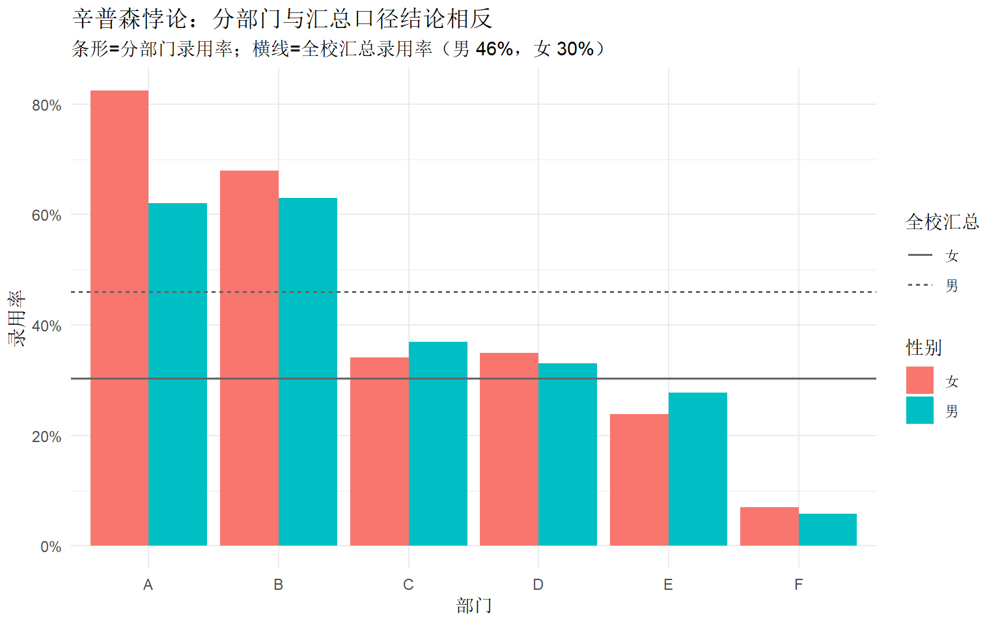
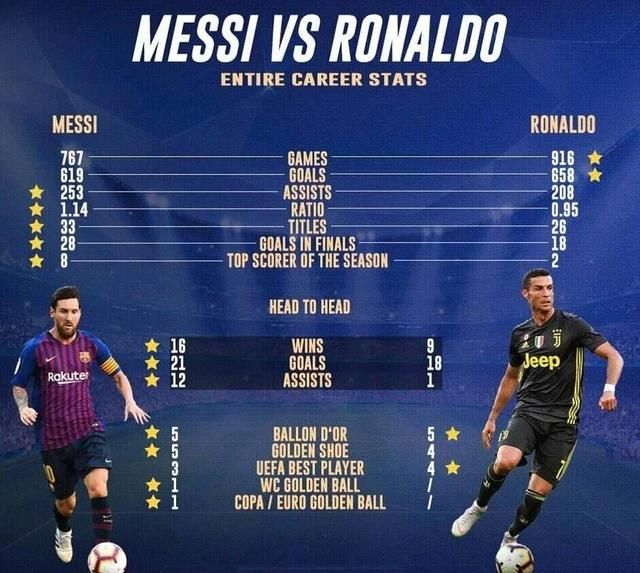
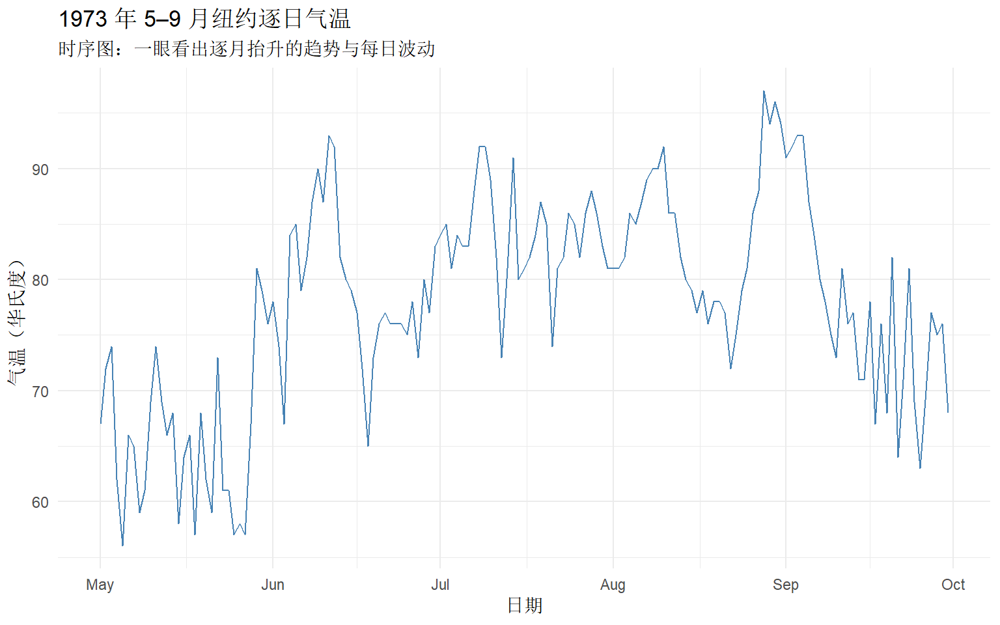
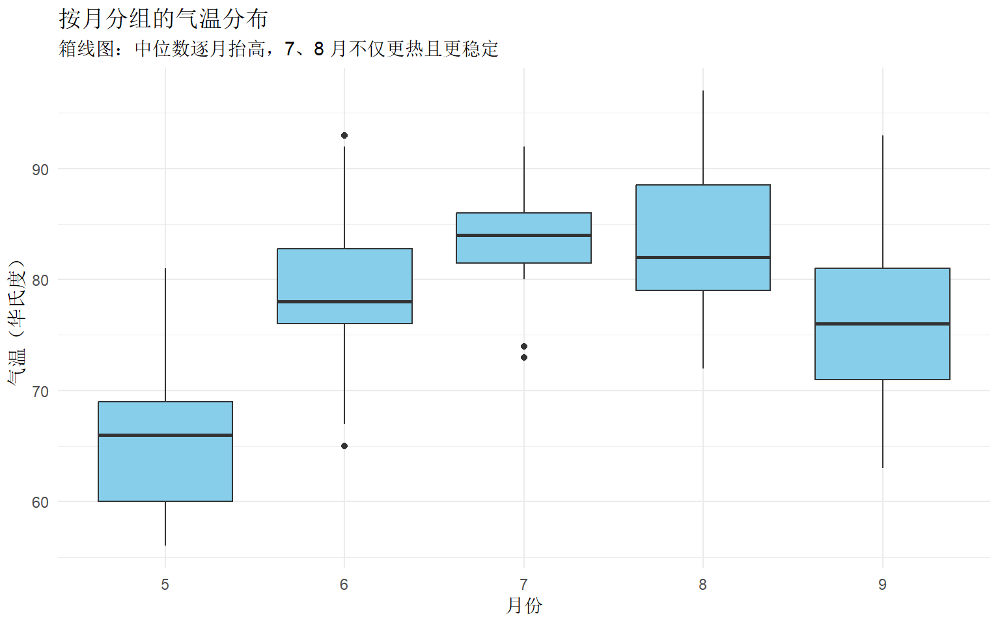
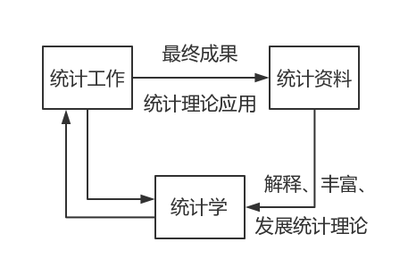
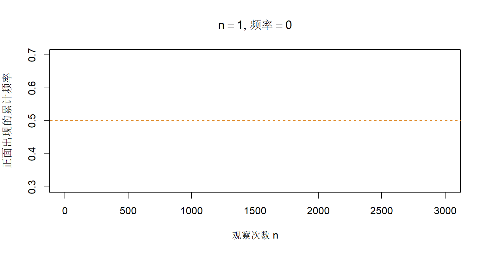
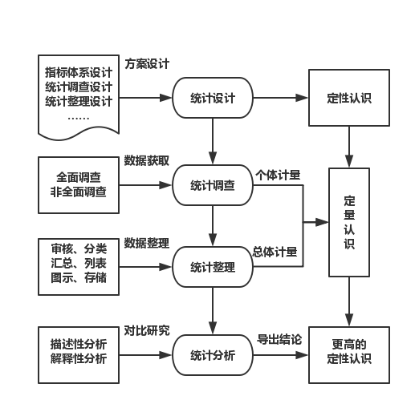

# 《统计学原理》R 课件 · 公共配置
# 每个章节 qmd 通过 ```{r, file="_setup.R"} 方式引入
knitr::opts_chunk$set(
comment = "#>",
collapse = TRUE,
out.width = "88%",
fig.align = "center",
fig.width = 8,
fig.height = 5,
fig.retina = 2,
dev.args = list(family = "sans")
)
# 中文友好的 ggplot 主题
if (requireNamespace("ggplot2", quietly = TRUE)) {
ggplot2::theme_set(
ggplot2::theme_minimal(base_size = 14) +
ggplot2::theme(
plot.title = ggplot2::element_text(face = "bold"),
panel.grid.minor = ggplot2::element_blank()
)
)
}
# 讲义用统一调色板
stat_pal <- c("#1a6b54", "#d97706", "#2563eb", "#c2410c", "#7c3aed", "#0891b2")第一章 绪论
《统计学原理》R 语言交互课件
孙方 · 山东农业大学经济管理学院
课程说明
本课程为《统计学》（V.2022），由山东农业大学经济管理学院孙方主讲。
开课前的准备事项：
建立课程班级微信群，请班长担任管理员；微信、邮箱待填写；教师办公室地址为西北片区。
个人学习准备：专用笔记本、教材。
本章内容框架：第一节统计与统计学（统计的含义与统计学的学科性质）；第二节统计研究与统计工作（统计研究的基本方法与统计工作的过程）；第三节统计学的基本概念（统计学中的基本概念体系）；第四节统计数据的计量尺度。讲授之前，另以前言部分的统计应用领域故事引入。
理论章节与学时安排一览
本课程讲义以宫春子主编《统计学原理》为主线教材，共 8 章（教材第 6 章本课程不涉及，沿教材章序编号）：
| 章次 | 讲义章名 | 主要内容 | 建议学时（参考） |
|---|---|---|---|
| 第 1 章 | 绪论 | 统计与统计学、基本概念、计量尺度 | 4 |
| 第 2 章 | 统计数据收集 | 数据来源、调查方案设计、调查问卷、调查误差 | 6 |
| 第 3 章 | 统计数据整理 | 统计分组、频数分布、统计表与统计图 | 6 |
| 第 4 章 | 综合指标分析 | 总量指标、相对指标、平均指标、变异指标 | 8 |
| 第 5 章 | 抽样调查 | 抽样组织形式、抽样误差与推断 | 6 |
| 第 7 章 | 相关与回归分析 | 相关分析、一元线性回归 | 8 |
| 第 8 章 | 时间数列分析 | 水平与速度指标、趋势与季节变动、预测 | 6 |
| 第 9 章 | 统计指数分析 | 综合指数、平均法指数、因素分析 | 4 |
学时为参考建议，实际安排以教务教学日历为准；各章标注”拓展、选讲/自学”的内容可视课时裁剪。
课程能力地图
学完这门课，你应当具备（也是考核所检验的）以下能力，它们由浅入深构成一条”能力阶梯”：
- 读懂统计图表：能批判地阅读媒体与报告中的统计图表和数据——知道纵轴是否从零开始、百分比与百分点的区别、汇总是否掩盖了分组结构（见前言”数据会骗人”三部曲）；
- 会用软件整理数据：能用 Excel（或 R）完成数据录入、分组、汇总与常用图表的制作；
- 能计算基本统计量：能手工计算并借助软件求得均值、中位数、方差、标准差等，并按数据层次正确选用指标（依据第四节的”方法准入门禁”表）；
- 能读懂推断结果：能理解抽样误差、区间估计、回归输出与显著性检验的表达，明白”用样本说话”的边界；
- 能写数据分析小报告：能围绕一个实际问题完成”问题→数据→分析→结论”的小型数据分析报告——这是本课程考核的最终出口。
课程指定软件为 Excel。R 语言自学资源指引（供学有余力者，均免费可得）：R 官网（cran.r-project.org）及其官方入门文档、统计之都（cosx.org）的在线《R 语言教程》与本课程”新增实践”材料。
前言 统计的应用领域
在进入概念学习之前，我们先通过几个经典故事和真实的新闻报道，感受统计能做什么、统计离我们有多近。
经典故事一：幸存者偏差——飞机护甲该加在哪里
故事发生在英国。二战前期德国势头很猛，英国从敦刻尔克撤回到本岛，德国每天不定期地对英国狂轰乱炸，后来英国空军发展起来，双方空战不断。
为了提高飞机的防护能力，英国的飞机设计师们决定给飞机增加护甲，但设计师们并不清楚应该在什么地方增加护甲，于是求助于统计学家。统计学家将每架中弹之后仍然安全返航的飞机的中弹部位描绘在一张图上，然后将所有中弹飞机的图都叠放在一起，这样就形成了浓密不同的弹孔分布。
统计学家很肯定地说——没有弹孔的地方就是应该增加护甲的地方。因为这个部位中弹的飞机都没能幸免于难。也就是说，返航飞机的数据只是”幸存者”的数据，真正需要防护的部位恰恰是幸存者身上看不到弹孔的部位——这就是幸存者偏差的典型体现，它告诉我们统计资料可能存在系统性缺失，数据分析必须考虑样本的来源与代表性。
经典故事二：啤酒与尿布——数据挖掘的经典范例
全球最大的零售商沃尔玛通过统计学的方法分析顾客购物的数据后发现，很多周末购买尿布的顾客同时也购买啤酒。经过深入观察和研究，发现美国家庭买尿布的多是爸爸：年轻的父亲们下班后要到超市买尿布，同时”顺手牵羊”带走啤酒，好在周末看棒球赛时过把酒瘾。后来沃尔玛就把尿布和啤酒摆放得很近，从而双双促进了尿布和啤酒的销量。
这个故事被公认为是统计学中数据挖掘的经典范例，说明统计分析能够从海量数据中发现隐藏的关联规律，并据此做出改进决策。
经典故事三：辛普森悖论——汇总数据会骗人
前两个故事分别讲了”数据缺失会骗人”与”关联会被误读”。第三个故事更微妙：数据一条不缺、算术完全正确，结论却仍然可能是错的——当数据被不恰当地汇总时。
故事原型是 1973 年秋季加州大学伯克利分校研究生院录取的真实数据（统计学史上被引用最多的案例之一）。从全校汇总看，男性申请者的录用率明显高于女性：
| 性别 | 申请数 | 录用率 |
|---|---|---|
| 男性 | 2590 | 46% |
| 女性 | 1835 | 30% |
“男性录用率比女性高出 16 个百分点”——看起来铁证如山。但把数据拆开、分到六个规模最大的系（A—F）再看，风向完全变了：
| 部门 | 男性申请数 | 男性录用率 | 女性申请数 | 女性录用率 | 哪边更高 |
|---|---|---|---|---|---|
| A | 825 | 62% | 108 | 82% | 女 |
| B | 560 | 63% | 25 | 68% | 女 |
| C | 325 | 37% | 593 | 34% | 男 |
| D | 417 | 33% | 375 | 35% | 女 |
| E | 191 | 28% | 393 | 24% | 男 |
| F | 272 | 6% | 341 | 7% | 女 |
经典故事三：辛普森悖论——汇总数据会骗人（续）
六个部门中四个（A、B、D、F）女性的录用率更高，只有 C、E 两个部门男性更高。逐部门看女性并不吃亏，汇总看女性却”落后”16 个百分点——两份同样真实的统计表，给出了方向相反的结论。
一句点破真相：男性申请者集中在录用率高的部门（A、B 两系录用率都在六成以上，共收到男性申请 1385 份），女性申请者更多流向了录用率低的部门（C、D、E、F 四系共收到女性申请 1702 份，录用率最高不过 35%）。换句话说，不是”同一场考试里女生表现差”，而是”女生更多报了难考的考场”——申请偏好的差异，被汇总数字伪装成了录用环节的差异。
这就是辛普森悖论（Simpson’s paradox）：分组比较时的结论，在合并数据后可能发生逆转。它提醒我们：汇总数据会骗人，汇总之前先想一想分组结构——同一批数据，“怎么分组、怎么加权”本身就可能决定结论的方向。（第 9 章平均指标因素分析中的”结构变动影响”，正是这一现象的指标化版本；第 7 章相关分析中”相关不等于因果”的警示亦与之同源。）
至此，三个经典故事构成”数据会骗人”三部曲：缺失会骗人（幸存者偏差——看不到的数据）、关联会骗人（啤酒与尿布——相关未必是因果）、汇总会骗人（辛普森悖论——分组结构会翻转结论）。数据不会自己说话，说什么、怎么说，取决于统计的功夫。
实践一：用 R 重现辛普森悖论——伯克利录取小数据集
讲义里”经典故事三”的两张表，只需 12 行数据就能在 R 中完整重现。我们要验证三件事：①汇总口径下男性录用率 46%、女性 30%；②分部门看，6 个部门中 4 个女性录用率更高；③悖论的根源在于申请者的”自选择”——男女申请者流向了录用率悬殊的不同部门。
# 实践一：伯克利 1973 年六大系录取数据（公开数据集 UCB Admissions）
library(tidyverse)
# 1. 手工录入六部门数据：申请数(app)与录用数(adm)，分男女
berkeley <- tribble(
~dept, ~male_app, ~male_adm, ~fem_app, ~fem_adm,
"A", 825, 512, 108, 89,
"B", 560, 353, 25, 17,
"C", 325, 120, 593, 202,
"D", 417, 138, 375, 131,
"E", 191, 53, 393, 94,
"F", 272, 16, 341, 24
)
# 2. 分部门口径：每个部门分别计算男女录用率
by_dept <- berkeley %>%
mutate(rate_male = male_adm / male_app,
rate_fem = fem_adm / fem_app)
by_dept
#> # A tibble: 6 × 7
#> dept male_app male_adm fem_app fem_adm rate_male rate_fem
#> <chr> <dbl> <dbl> <dbl> <dbl> <dbl> <dbl>
#> 1 A 825 512 108 89 0.621 0.824
#> 2 B 560 353 25 17 0.630 0.68
#> 3 C 325 120 593 202 0.369 0.341
#> 4 D 417 138 375 131 0.331 0.349
#> 5 E 191 53 393 94 0.277 0.239
#> 6 F 272 16 341 24 0.0588 0.0704
summarise(by_dept, n_fem_higher = sum(rate_fem > rate_male)) # 期望输出 4
#> # A tibble: 1 × 1
#> n_fem_higher
#> <int>
#> 1 4
# 3. 汇总口径：先合计申请数与录用数，再算录用率
overall <- berkeley %>%
summarise(rate_male = sum(male_adm) / sum(male_app), # 期望 0.460
rate_fem = sum(fem_adm) / sum(fem_app)) # 期望 0.304
overall
#> # A tibble: 1 × 2
#> rate_male rate_fem
#> <dbl> <dbl>
#> 1 0.460 0.304
# 4. 一张图同时呈现两种口径：分部门条形 + 全校汇总横线
berkeley_long <- berkeley %>%
pivot_longer(cols = -dept,
names_to = c("gender", ".value"),
names_pattern = "(male|fem)_(app|adm)") %>%
mutate(rate = adm / app,
gender = if_else(gender == "male", "男", "女"))
overall_long <- overall %>%
pivot_longer(cols = everything(), names_to = "gender", values_to = "rate") %>%
mutate(gender = if_else(gender == "rate_male", "男", "女"))
ggplot(berkeley_long, aes(x = dept, y = rate, fill = gender)) +
geom_col(position = position_dodge()) +
geom_hline(data = overall_long, aes(yintercept = rate, linetype = gender),
color = "grey40", linewidth = 0.6) +
scale_y_continuous(labels = scales::percent) +
labs(title = "辛普森悖论：分部门与汇总口径结论相反",
subtitle = "条形=分部门录用率；横线=全校汇总录用率（男 46%，女 30%）",
x = "部门", y = "录用率", fill = "性别", linetype = "全校汇总") +
theme_minimal()
注记
观察与思考
- 对照输出：分部门口径 4/6 个部门女性更高，汇总口径男性反而高 16 个百分点——你在 R 里亲手复现了统计学史上最著名的”数据会骗人”案例。
- 改变”加权结构”即可消除悖论：试试把女性申请数人为改成与男性同分布（例如
mutate(fem_app = male_app * 0.5, fem_adm = round(fem_app * rate_fem))后重新汇总），观察汇总录用率如何变化。 - 连接后续章节：第 3 章的分组表、第 4 章的”结构影响”、第 9 章平均指标因素分析中的”结构变动影响指数”，讲的都是同一件事。
警告
统计学的核心价值：寻找数据中的规律
在浩瀚繁杂的数据背后，往往隐藏着客观世界的内在规律。单凭直觉和零散的观察，我们难以发现这些规律；而统计学正是提供了一套科学的收集、整理、分析数据的方法，帮助我们从数据中提炼信息、发现规律，从而为认识和解决问题提供依据。一句话：统计学能够帮助我们寻找数据中的规律！这也是学习《统计学原理》这门课程的意义所在。
但要注意，数据不等于信息。数据是原材料，信息是从中提炼出的规律，两者不能画等号——数据多，不等于信息多：
- 第谷的海量数据 vs 开普勒的规律。天文学家第谷·布拉赫（Tycho Brahe）二十余年积累了当时世界上最庞大的天文观测数据，但他本人始终停留在”数据”层面；他的继任者开普勒（Johannes Kepler）从这堆数据中筛出了行星运动三大定律。海量数据没有自动变成信息，规律要靠科学的提炼。
- 《文学文摘》的 240 万 vs 盖洛普的 5000。1936 年美国总统选举预测：《文学文摘》（Literary Digest）回收约 240 万份问卷，规模创当时之最，却预测错了赢家；盖洛普（Gallup）仅用约 5000 人的科学抽样样本，便成功预测了罗斯福连任。代表性比样本量更重要——240 万输给了 5000。
统计学的核心价值：寻找数据中的规律（续）
统计学家纳特·西尔弗（Nate Silver）在《信号与噪声》中写道：“数字不会自己说话。是我们替它们说话，是我们赋予它们意义。”（The numbers have no way of speaking for themselves. We speak for them. We imbue them with meaning.）
这两组对偶故事也为后续学习预埋了两处伏笔：其一，第二节将讲到的大量观察法，重点从来不是”越多越好”，而是”足够且同质”——观察量要大到足以抵消偶然因素，且口径一致、可比；其二，第 5 章抽样调查将系统回答”多少样本才够、怎样抽才有代表性”。
统计的应用领域概览
统计作为一种数据分析方法，其应用范围极为广泛，主要体现在以下几个方面：
- 学术研究——各学科研究都离不开数据的收集与分析；
- 报纸、杂志、电视——大众传媒中大量使用统计数据传递信息；
- 商务与经济——企业经营决策和经济分析以统计为基础；
- 文学研究——如利用统计方法进行文学作品的作者鉴定等；
- 体育等——比赛成绩分析、运动员表现评估等。
可见，统计无处不在，学习统计学具有重要意义。
报纸、杂志、电视与统计
统计数字广泛出现在新闻报道中，“据统计”是媒体报道事实的常用表述。请看三个真实案例。
案例一：地震灾情通报。据统计，截至 8 月 6 日 16 时，德州市平原县 5.5 级地震共造成 24 人轻伤（德州 23 人、聊城 1 人），213 处（德州 165 处、聊城 48 处）房屋及墙体受损，震区水、电、通信等基础设施正常。
案例二：汶川大地震。汶川大地震是中华人民共和国成立以来破坏性最强、波及范围最广、灾害损失最重、救灾难度最大的一次地震：
- 地震的面波震级为 8.0 级，地震波围绕地球传播了 6 圈；
- 严重破坏地区约 50 万平方千米；
- 截至 2008 年 9 月 25 日，共计造成 69227 人遇难、17923 人失踪、374643 人不同程度受伤、1993.03 万人失去住所，受灾总人口达 4625.6 万人；
- 截至 2008 年 9 月，造成直接经济损失 8451.4 亿元。
案例三：2018 年重庆公交坠江案。该事件源自过站乘客和司机间的互殴。北京市第三中级人民法院对 2014 年至 2016 年的这类刑事案件进行梳理后发现：由当事人言语失和，尤其是酒后言语失和所引发的案件，占全部案件的近 40%。通过法院对多起同类案件数据的统计梳理，可以从个别事件（个例）上升到规律性认识（比例 40%），这正是统计在媒体与社会分析中的作用。
报纸、杂志、电视与统计（续）
以上案例说明，报纸、杂志、电视等媒体常用统计数据描述和传达信息，统计数据与日常生活息息相关。
统计在商务与经济中的应用
统计学广泛应用于商务与经济的四大领域：
| 领域 | 主要应用 |
|---|---|
| 会计 Accounting | 审计 Auditing；成本核算 Costing |
| 管理 Management | 了解员工 Describe Employees；提高质量 Quality Improvement |
| 财务 Finance | 财务走向 Financial Trends；预测 Forecasting |
| 营销 Marketing | 消费者偏好 Consumer Preferences；营销效果 Marketing Effects |
（图示说明：以四色分块示意图展示统计在会计、管理、财务、营销四个商务领域的具体应用，帮助学生直观理解统计学的实用价值。）
统计学在商务与经济领域具有极其重要的地位：
- 在诺贝尔经济学奖获得者中，三分之二以上的研究成果与统计和经济定量分析有关；
- 萨缪尔森在其经典的教科书《经济学》中特别提到：“在许多与经济学有关的其他学科，统计学是特别重要的”。
在西方大公司里经常听到这样一句话——“我们相信上帝，除此之外，我们只相信数据。”这说明数据与统计分析在现代企业管理决策中的核心地位，也说明统计学是学习经济学、从事商务与经济研究不可或缺的基础工具。
统计在文学研究中的应用：《红楼梦》后40回出自谁的手笔
《红楼梦》一书共 120 回，一般认为前 80 回为曹雪芹所写，后 40 回为高鹗所续，长期以来对这个问题一直有争议。1981 年，首届国际《红楼梦》研讨会在美国召开，威斯康星大学讲师陈炳藻独树一帜，宣读了题为《从词汇上的统计论〈红楼梦〉作者的问题》的论文。
此后，研究者从字、词出现频率入手，通过计算机进行统计、处理、分析，对《红楼梦》后 40 回系高鹗所作这一流行看法提出异议。其研究方法是：
- 创造性地将 120 回看成是 120 个样本；
- 确定与情节无关的虚词作为变量；
- 用统计的方法进行聚类分析。
结果果然将 120 回分成两类——即前 80 回为一类，后 40 回为一类。在此基础上，统计学者又进一步追问：前 80 回是否为曹雪芹所写？这时找来一本曹雪芹的其它著作进行对比分析，结果证实其用词手法与《红楼梦》前 80 回完全相同，据此断定前 80 回为曹雪芹一人手笔。那么，后 40 回是否为高鹗所写呢？统计分析的结果推翻了后 40 回是高鹗一个人所写的传统说法。
统计在文学研究中的应用：《红楼梦》后40回出自谁的手笔（续）
这一统计学论证在红学界轰动很大，令红学界大为赞叹。它展示了统计方法（频数统计与聚类分析）在文献作者考证（作者归属识别）中的独特价值：通过比较作品用词手法的统计特征，可以将作者考证问题转化为可检验的统计推断问题，即所谓”计量文学”研究。
统计在体育中的应用：梅西与C罗的生涯数据对比
统计广泛应用于体育领域，通过数据的收集、整理与对比分析，可以客观评价运动员的表现。以下是两位足球巨星整个职业生涯的统计数据对比（Entire Career Stats）。
生涯总体数据：
| 指标 | 梅西 (MESSI) | C罗 (RONALDO) |
|---|---|---|
| 比赛场次 (Games) | 767 | 916 |
| 进球数 (Goals) | 619 | 658 |
| 助攻数 (Assists) | 253 | 208 |
| 进球率 (Ratio) | 1.14 | 0.95 |
| 冠军头衔 (Titles) | 33 | 26 |
| 决赛进球 (Goals in Finals) | 28 | 18 |
| 赛季最佳射手次数 (Top Scorer of the Season) | 8 | 2 |
直接交锋数据 (Head to Head)：
| 指标 | 梅西 | C罗 |
|---|---|---|
| 胜场 (Wins) | 16 | 9 |
| 进球 (Goals) | 21 | 18 |
| 助攻 (Assists) | 12 | 1 |
个人荣誉数据：
统计在体育中的应用：梅西与C罗的生涯数据对比（续）
| 荣誉 | 梅西 | C罗 |
|---|---|---|
| 金球奖 (Ballon D’Or) | 5 | 5 |
| 金靴奖 (Golden Shoe) | 5 | 4 |
| 欧足联最佳球员 (UEFA Best Player) | 3 | 4 |
| 世界杯金球奖 (WC Golden Ball) | 1 | / |
| 美洲杯/欧洲杯金球奖 (Copa/Euro Golden Ball) | 1 | / |
通过总量指标（进球、助攻、场次）与相对指标（进球率 = 进球数/场次，如梅西 1.14 = 619/767（近似），C罗 0.95 = 658/916（近似））的结合，可以更全面、客观地比较两名运动员的综合表现，体现统计数据在体育评价中的重要作用。

进一步地，还可以阅读球员的赛季统计表。下表展示一名球员 2002-2003 至 2017-2018 赛季的联赛出场、进球、助攻及转会费数据，可用于学习统计表的阅读与描述统计量的计算：
统计在体育中的应用：梅西与C罗的生涯数据对比（续）
| 赛季 | 联赛 | 出场 | 进球 | 助攻 | 转会费 |
|---|---|---|---|---|---|
| 2002-2003 | 葡超 | 25 | 3 | 6 | - |
| 2003-2004 | 英超 | 28 | 4 | 3 | 1240 万英镑 |
| 2004-2005 | 英超 | 33 | 5 | 4 | - |
| 2005-2006 | 英超 | 33 | 9 | 6 | - |
| 2006-2007 | 英超 | 34 | 17 | 14 | - |
| 2007-2008 | 英超 | 33 | 31 | 7 | - |
| 2008-2009 | 英超 | 33 | 18 | 6 | - |
| 2009-2010 | 西甲 | 29 | 26 | 7 | 9600 万欧元 |
| 2010-2011 | 西甲 | 34 | 40 | 10 | - |
| 2011-2012 | 西甲 | 38 | 46 | 12 | - |
| 2012-2013 | 西甲 | 34 | 34 | 10 | - |
| 2013-2014 | 西甲 | 30 | 31 | 9 | - |
| 2014-2015 | 西甲 | 35 | 48 | 16 | - |
| 2015-2016 | 西甲 | 36 | 35 | 11 | - |
| 2016-2017 | 西甲 | 29 | 25 | 5 | - |
| 2017-2018 | 西甲 | 17 | 8 | 3 | - |
统计在体育中的应用：梅西与C罗的生涯数据对比（续）
该表为典型的时间数列（定距数据），可据此计算均值、极差、观察数据随赛季的变化趋势（如进球峰值出现在 2014-2015 赛季）。
统计学能做什么：纽约航班数据的全流程一瞥
在学习概念之前，再来看一眼”统计学能做什么”的完整样貌。下面的真实案例只做预告、不展开方法细节（图表在课堂展示，方法在后续各章逐一学到）。
实际问题：纽约的航班延误有规律可循吗？ 数据集记录了 2013 年全年从纽约三大机场（EWR、JFK、LGA）起飞的全部 336 776 个航班，每个航班 19 个变量（日期、计划与实际起飞时刻、延误时长、航空公司等）——一张”航班表”，就是一座数据金矿。
第一步是描述统计。把 33 万条记录按天汇总，得到”逐日航班数与平均起飞延误”表（节选）：
| 日期 | 航班数 | 平均起飞延误（分钟） |
|---|---|---|
| 2013-01-01 | 842 | 11.5 |
| 2013-01-02 | 943 | 13.9 |
| 2013-01-03 | 914 | 11.0 |
| 2013-01-04 | 915 | 9.0 |
| 2013-01-05 | 720 | 5.7 |
| 2013-01-06 | 832 | 7.1 |
| 2013-01-07 | 933 | 5.4 |
统计学能做什么：纽约航班数据的全流程一瞥（续）
再把逐日数据按”星期几”分组画箱线图：周六、周日的航班数明显少于工作日；进一步只看周六，全年 52 个周六的平均起飞延误普遍更低——“幸运星期六”名不虚传。换一个分组维度看机场：全年平均起飞延误 EWR 为 15.0 分钟 > JFK 12.0 分钟 > LGA 10.4 分钟，“从哪个机场起飞”本身就有信息含量。再进一步，把 JFK 全年航班画成”星期 × 时刻”的延误热力图，可以看到延误随一天内时刻推移而加重的深色带——早班机最”守时”。
第二步是推断统计（方法在后续章节才学到，此处只看结论的形态）：检验”起飞延误是否与星期几、与起飞时刻有关”，结果均高度显著；回归分析给出直观的量化表述——一天之内，起飞时刻每推后 1 小时，平均延误约增加 1.5 分钟。“坐早班机更不容易延误”这句经验之谈，在 33 万条数据中得到了统计支持。
最后解释数据、得到结论：航班延误并非完全随机，而与星期几、时段、机场系统相关——选周六出行、选早班机、选延误更少的机场，是数据支持的策略。实际问题 → 收集数据 → 处理数据 → 分析数据 → 解释数据 → 得到结论，这六步正是统计分析的完整过程（与第二节”统计工作的四个阶段”互为表里）。
实践三：一表通全流程——用 airquality 走一遍统计分析六步
前言的纽约航班案例（336 776 架次）用一张数据表走完了”实际问题→收集数据→处理数据→分析数据→解释数据→得到结论”六步。这里用 R 内置的 airquality 数据集（1973 年 5–9 月纽约地区逐日空气质量，153 行 6 列，无需安装任何包）复刻同样的流程——数据集虽小，六步俱全。
# 实践三：统计分析六步流程的迷你全流程演示
library(tidyverse)
# 第 1 步【实际问题】：纽约的气温有随月份推进而升高的规律吗？
# 第 2 步【收集数据】：R 内置 airquality（1973-05-01 至 1973-09-30 逐日观测）
glimpse(airquality) # 变量：Ozone, Solar.R, Wind, Temp, Month, Day
#> Rows: 153
#> Columns: 6
#> $ Ozone <int> 41, 36, 12, 18, NA, 28, 23, 19, 8, NA, 7, 16, 11, 14, 18, 14, …
#> $ Solar.R <int> 190, 118, 149, 313, NA, NA, 299, 99, 19, 194, NA, 256, 290, 27…
#> $ Wind <dbl> 7.4, 8.0, 12.6, 11.5, 14.3, 14.9, 8.6, 13.8, 20.1, 8.6, 6.9, 9…
#> $ Temp <int> 67, 72, 74, 62, 56, 66, 65, 59, 61, 69, 74, 69, 66, 68, 58, 64…
#> $ Month <int> 5, 5, 5, 5, 5, 5, 5, 5, 5, 5, 5, 5, 5, 5, 5, 5, 5, 5, 5, 5, 5,…
#> $ Day <int> 1, 2, 3, 4, 5, 6, 7, 8, 9, 10, 11, 12, 13, 14, 15, 16, 17, 18,…
# 第 3 步【处理数据】：按月汇总（缺失值用 na.rm = TRUE 排除）
monthly <- airquality %>%
group_by(Month) %>%
summarise(n_days = n(),
mean_temp = mean(Temp, na.rm = TRUE),
mean_wind = mean(Wind, na.rm = TRUE),
mean_ozone = mean(Ozone, na.rm = TRUE))
monthly
#> # A tibble: 5 × 5
#> Month n_days mean_temp mean_wind mean_ozone
#> <int> <int> <dbl> <dbl> <dbl>
#> 1 5 31 65.5 11.6 23.6
#> 2 6 30 79.1 10.3 29.4
#> 3 7 31 83.9 8.94 59.1
#> 4 8 31 84.0 8.79 60.0
#> 5 9 30 76.9 10.2 31.4
# 第 4 步之一【分析数据：描述统计】
# (a) 时序图：把逐日气温放到时间轴上看全貌（对应航班案例的逐日时序图）
daily <- airquality %>%
mutate(date = as.Date(sprintf("1973-%02d-01", Month), format = "%Y-%m-%d") + (Day - 1))
ggplot(daily, aes(x = date, y = Temp)) +
geom_line(color = "steelblue") +
labs(title = "1973 年 5–9 月纽约逐日气温",
subtitle = "时序图：一眼看出逐月抬升的趋势与每日波动",
x = "日期", y = "气温（华氏度）") +
theme_minimal()

# 第 4 步之二【分析数据：推断统计】月份对气温的影响显著吗？（方差分析预告，第 5 章后详解）
summary(aov(Temp ~ factor(Month), data = airquality))
#> Df Sum Sq Mean Sq F value Pr(>F)
#> factor(Month) 4 7061 1765.3 39.85 <2e-16 ***
#> Residuals 148 6557 44.3
#> ---
#> Signif. codes: 0 '***' 0.001 '**' 0.01 '*' 0.05 '.' 0.1 ' ' 1
# 第 5-6 步【解释数据、得到结论】：
# 五个月的平均气温依次为 65.5 -> 79.1 -> 83.9 -> 84.0 -> 76.9（华氏度），
# 气温先升后降、7-8 月达峰；ANOVA 的 F = 39.85（p < 2e-16）表明
# "月份之间平均气温完全相同"的假设几乎不可能成立。
# 结论：纽约夏季气温存在显著的月份格局，8 月末开始回落。注记
与讲义的三处呼应
- 六步流程：本实践逐行标注了”实际问题/收集/处理/分析/解释/结论”，与讲义”统计工作的四个阶段”小节中四阶段—六步对照表一一对应；
- 描述→推断的分工：时序图与箱线图是描述统计（第 3 章详学），
aov()是推断统计（第 5 章后详解）——这正是”描述是推断的前提”的可操作版本； - 数据集策略：本课程公开可复现的数据入口优先使用 R 内置数据集（airquality、mtcars、iris）；学有余力者可运行
install.packages("nycflights13")安装航班数据包，把本实践的代码骨架照搬到 33 万行的真实大数据上重走一遍。
警告
统计学的重要性：名家的论述
著名统计学家克劳（C.R.RAO）曾经说过：
在终极的分析中，一切知识都是历史； 在抽象的意义下，一切科学都是数学； 在理性的基础上，所有的判断都是统计学。
这句名言揭示了统计学的普遍意义：无论哪个学科领域，只要涉及基于数据的理性判断与决策，都离不开统计学的方法与思想。这也说明学习《统计学原理》对各个专业都具有重要价值。
第一节 统计与统计学
本节回答”统计是什么”：先辨析”统计”一词的三层含义，再给出统计学的定义与分科，最后讨论统计学与数学、计量经济学等相关学科的关系，以及统计的职能与应用。
统计一词的三方面含义及其关系
“统计”一词具有三层含义：
- 统计工作：指搜集、整理和分析客观事物总体数量方面资料的工作过程，是一种调查研究活动，是统计的基础。
- 统计资料：统计工作所取得的各项数字资料及有关文字资料，即统计工作的成果，一般反映在统计表、统计图、统计手册、统计年鉴、统计资料汇编和统计分析报告中。
- 统计学（科学）：研究如何搜集、整理和分析统计资料的理论与方法，是一门方法论科学。
三者之间存在紧密联系：
- 统计工作与统计资料之间是”工作与工作成果”的关系：统计资料是统计工作的产出结果——统计工作产生其最终成果，即统计资料；
- 统计学与统计工作之间是”实践与理论”的关系：统计工作属于实践活动，统计学则是从实践中总结出来的理论方法，是统计理论应用于统计工作、指导统计工作的开展；
- 统计资料与统计学：统计资料经过解释、丰富、发展统计理论，推动统计学不断完善和发展。
三者构成一个循环：统计工作以统计理论为指导，产出统计资料；统计资料又反过来解释、丰富和发展统计理论，如此不断循环推进。工作产生资料，理论指导实践——理解这一关系是学习统计学原理的起点。

统计学的定义与统计工作的四个环节
统计学是一门关于各种数据信息采集、处理、辨识、分析和推断的方法论科学。统计工作可概括为四个环节：
- 数据搜集：例如，调查与试验；
- 数据整理：例如，分组；
- 数据展示：例如，图和表；
- 数据分析：例如，回归分析。
统计学的分科（一）：理论统计学与应用统计学
按研究取向不同，统计学可分为两类：
- 理论统计学：以方法论为中心，建立统计方法体系；
- 应用统计学：以问题为中心，应用统计方法解决实际问题。
描述统计
描述统计是对数据进行搜集、整理和展示，进而描述数据特征、找出数据基本规律的统计方法。
内容（三个方面）：
- 搜集数据（资料的搜集、数据的加工处理）；
- 整理数据；
- 展示数据（数据的显示）。
此外还包括数据分布特征的概括和分析。
目的：
- 描述数据特征；
- 找出数据的基本规律。
推断统计
推断统计是指依据样本资料推断总体特征的技术和方法。其两大核心内容是：
- 参数估计：利用样本信息对总体的未知参数进行数值估计；
- 假设检验：先对总体参数提出某种假设，再利用样本信息检验该假设是否成立。
推断统计的目的是对总体特征作出推断。其逻辑是从总体中抽取样本（抽样），再由样本信息反过来推断总体，解决当无法对总体进行全面调查时，如何科学地由部分认识整体的问题。
（图示说明：示意图展示”总体→样本→推断→总体”的循环关系，直观说明推断统计由样本推断总体的基本思想。）
描述统计是推断统计的前提，推断统计是描述统计的发展。推断统计是现代统计的核心，是统计认识过程的高级阶段。
例题：捉放法——估算鱼塘里有多少鱼
华北某地的一个村庄，很多农户挖塘养鱼，总要先估算一下鱼塘里有多少鱼。假设某农户春季放了大约 1 万条鲤鱼苗，这些鱼苗不一定都成活。现在用“捉放法”来帮该农户估算一下，他的鱼塘中现有多少条鱼。
做法是：
- 先从鱼塘中捕出 200 条鱼，做上标记之后，再放回鱼塘；
- 过几天后，再从鱼塘中捕出 500 条鱼，数一下其中有多少条标有记号；
- 根据第 2 次捕出的鱼中有记号的鱼占捕出鱼数的比例，就可以估计全塘鱼的总数。
思考：这样做的依据是什么呢？——这正是”由样本推断总体”的归纳推断思想的直观运用。
参数与统计量：记号对照与一个灯泡的平行例
捉放法里，“全塘鱼的总数”是我们想知道却未知的数，“第二次捕出的 500 条中有记号者的比例”是手里已有的数。统计学给这两类数起了专门的名字，并用不同的字母体系加以区分：
- 参数（parameter）：描述总体特征的概括性数字度量，是研究者想要了解的总体特征值。参数通常未知，习惯用希腊字母表示；
- 统计量（statistic）：描述样本特征的概括性数字度量，由样本数据计算得到，是样本的函数。统计量是已知的，习惯用英文字母表示。
两者一一对应，记号对照如下。这张表是全课程的”记号字典”——第 4 章的方差与标准差（\(\sigma^2\) 与 \(S^2\)）、第 5 章的总体指标与样本指标、第 7 章的相关系数（\(\rho\) 与 \(r\)）都沿用此表：
| 总体参数（希腊字母） | 样本统计量（英文字母） | 含义 |
|---|---|---|
| \(\mu\) | \(\bar{X}\) | 均值：总体均值 ↔︎ 样本均值 |
| \(\sigma^2\) | \(S^2\) | 方差：总体方差 ↔︎ 样本方差 |
| \(\sigma\) | \(S\) | 标准差 |
| \(P\) | \(p\) | 比率（成数） |
| \(\rho\) | \(r\) | 相关系数 |
| \(N\) | \(n\) | 单位数：总体容量 ↔︎ 样本观测数 |
参数与统计量：记号对照与一个灯泡的平行例（续）
再看一个与捉放法平行的工业例子。NORRIS 电器公司想知道新产灯泡的平均使用寿命：总体是该公司生产的所有新灯泡，其平均寿命 \(\mu\) 是未知参数（总不能把每只灯泡都点亮到坏来求真值）；于是从生产线上抽检 200 只灯泡做寿命试验，这 200 只灯泡构成样本；由样本数据算得平均寿命为 76 小时，这个 \(\bar{X}=76\) 小时是已知统计量；最后用统计量推断参数——“这批新产灯泡的平均寿命约为 76 小时”。总体→样本是”取数”（抽样），统计量→参数是”还数”（推断），一去一回，正是推断统计的全部逻辑。
描述统计与推断统计的关系
统计学探索现象数量规律性的过程可以概括如下：
- 数据来源：反映客观现象的数据，包括总体数据和样本数据；
- 描述统计：对统计数据进行搜集、整理、显示和分析等；
- 推断统计：利用样本信息和概率论对总体的数量特征进行估计和检验等；
- 理论基础：概率论（包括分布理论、大数定律和中心极限定理等）为推断统计提供理论支撑。
无论通过描述统计（基于总体数据）还是推断统计（基于样本数据），最终目的都是揭示总体内在的数量规律性。描述统计是推断统计的基础，推断统计借助概率论将样本信息推广到总体，二者共同构成统计学探索现象数量规律性的完整过程。
（图示说明：流程示意图展示了从数据经描述统计（配合概率论）到推断统计、最终揭示总体数量规律性的逻辑链条，帮助学生理解两者关系。）
统计学与数学的关系
统计学与数学联系密切，但二者并不等同，具体体现在以下三点：
- 统计学运用到大量的数学知识——统计数据的收集、整理与分析都离不开数学工具的支撑；
- 数学为统计理论和统计方法的发展提供基础——数学是统计学理论构建和方法创新的根基；
- 不能将统计学等同于数学——统计学以客观现象的数量方面为研究对象，具有自身独立的研究对象和方法体系，与纯抽象的数学有本质区别。
R 实践 · 一段代码看「描述」与「推断」
为什么用 R？
统计学的两类分科，在 R 里对应两句话：描述统计是对”手里这份数据”直接概括；推断统计是”用样本去猜总体”。下面用同一组身高数据各做一次。
# 描述统计：对某班 40 名学生身高（cm）直接概括
heights <- c(165,168,172,158,176,170,169,163,175,171,
167,173,166,162,178,170,165,174,160,169,
172,167,170,164,177,168,171,166,173,170,
159,175,168,170,164,172,167,170,166,171)
c(均值 = mean(heights), 中位数 = median(heights), 标准差 = sd(heights))
#> 均值 中位数 标准差
#> 168.775000 169.500000 4.741997统计学与计量经济学的关系与区别
计量经济学是经济学、数学和统计学的综合，但又是独立于这三门学科的一门科学。在计量经济学中，大量地运用统计方法去研究经济及其相关领域的问题。计量经济学并不是三门学科的简单叠加，而是交叉融合后形成的一门独立科学；统计学为其提供核心分析工具。
二者的区别体现在两个方面。
其一，研究侧重点不同：
- 统计学：侧重于数据的搜集、整理、归纳和分析；
- 计量经济学：侧重于经济理论的验证、经济政策的评议和经济量未来值的预测。
其二，研究过程不同。统计学的研究过程经历五个阶段：统计设计、统计调查、统计整理、统计分析、统计资料的积累。计量经济学的研究过程一般经历：
- 确定用于测量经济现象的模型；
- 求出模型的参数估计值；
- 对估计值进行评价；
- 对模型预测的有效性进行评价。
统计的职能和应用
统计具有三大职能：
| 序号 | 职能 | 说明 |
|---|---|---|
| 01 | 信息职能 | 统计通过数据采集与整理，提供社会经济信息 |
| 02 | 咨询职能 | 依据掌握的统计信息为决策提供咨询建议 |
| 03 | 监督职能 | 通过统计信息对经济运行进行监测与监督 |
统计的应用领域：
| 序号 | 应用领域 |
|---|---|
| 01 | 经济分析 |
| 02 | 财务会计 |
| 03 | 市场营销 |
| 04 | 科学管理 |
| 05 | 科学研究 |
统计的三大职能相互联系、相辅相成：信息职能是基础，咨询职能与监督职能是信息职能的延伸和拓展。统计方法广泛应用于经济分析、财务会计、市场营销、科学管理和科学研究等各个领域。
（图示说明：示意图以三支向下书签图标编号01-03对应三大职能，右侧编号01-05列出五大应用领域，直观展示职能与应用的对应框架。）
第二节 统计研究与统计工作
本节从”研究”与”工作”两个维度展开：统计学的研究对象是什么、有何特点；统计研究运用哪些基本方法；统计工作经历怎样的过程；统计的组织机构如何设置。
统计学的研究对象
社会经济统计学的研究对象是大量的社会经济现象总体的数量方面，即研究社会经济现象总体的数量特征和数量关系。理解这一研究对象需把握三个要点：
- 研究的是”总体”而非个别现象；
- 研究的是”数量方面”而非现象的质的规定性本身；
- 具体落脚于”数量特征”与”数量关系”两个层面。
统计学的研究对象是大量社会经济现象的数量方面，具体包括：
- 现象的规模水平；
- 现象之间的数量关系；
- 质量互变的数量界限。
具体来说，统计学研究社会经济现象的规模、水平、速度、结构、比例、差别程度、普遍程度等等。
统计学研究对象的特点
统计学研究对象具有五个特点：
- 数量性——统计研究以数量方面为其研究对象。统计学的研究对象是大量的社会经济现象的总体数量方面，示例指标如可支配收入、社会保障水平、国内生产总值。定量研究要在定性研究的前提下进行：定性研究是基础，定量研究是目标，研究路径为”质——量——质”。
- 总体性——统计着眼于现象的总体数量特征，统计工作研究的是总体的数量特征，而非个体的数量表现。示例：人口普查、捉放法（投放法）。
- 具体性——统计数值是具体现象在具体时间、地点条件下的数量表现，统计工作研究的总体数量是一个有具体时间、具体地点、具体条件限定的数量。例如：2015 年，全国居民人均消费支出 15712 元。
- 社会性——统计工作存在明显的社会性，强调要克服统计工作中的主观随意性，抑制任意夸大或缩小统计数字、歪曲反映实际的现象出现。
- 广泛性——统计学研究的数量方面是所有的社会经济现象的数量方面，覆盖自然、社会、经济等广泛领域。
（图示说明：示意图以中心圆圈（统计学研究对象的特点）向五个分支（数量性、总体性、具体性、社会性、广泛性）辐射，帮助学生直观记忆五大特点。）
统计学的研究方法（总览）
统计学的研究方法主要包括以下五种：
- 大量观察法
- 统计分组法
- 综合指标法
- 归纳推断法
- 统计模型法
这五种方法共同构成统计研究方法体系，是从数据收集、整理到分析推断全过程中所运用的基本方法。
（图示说明：示意图以”统计的研究方法”为中心，向五个分支框（大量观察法、统计分组法、综合指标法、归纳推断法、统计模型法）展开，直观呈现统计研究方法的整体框架。）
大量观察法与大数定律
大量观察法指对所研究的事物的全部或足够数量进行观察的方法。其目的是使影响个体的偶然因素相互抵消，显示出总体现象的一般特征。
大量观察法的数理依据是大数定律：在随机事件的大量重复出现中，往往呈现几乎必然的规律。也可以表述为：在试验不变的条件下，重复试验多次，随机试验的频率以概率为稳定值。单个随机事件的结果具有偶然性，但通过大量重复观察，其频率会逐渐稳定于某一固定值（即概率）。这说明统计研究必须对足够多的单位进行观察，才能消除偶然因素的影响，揭示现象的内在规律性。
（图示说明：图中以抛掷次数（100~550次）为横轴、频率为纵轴的折线图，展示随着重复试验次数增多，频率波动减小并趋于稳定（约0.5），直观演示大数定律中”频率以概率为稳定值”的结论。）
下表是自 18 世纪以来一些统计学家进行抛硬币试验所得的数据：
| 试验者 | 试验次数 n | 正面朝上的次数 m | 正面朝上的频率 m/n |
|---|---|---|---|
| 布丰 | 4040 | 2048 | 0.5069 |
| 德•摩根 | 4092 | 2048 | 0.5005 |
| 费勒 | 10000 | 4979 | 0.4979 |
大量观察法与大数定律（续）
通过大量重复观察（抛硬币试验），正面朝上的频率 \(\frac{m}{n}\) 随试验次数增多而稳定地接近 0.5，说明大量观察法能够揭示现象的规律性，体现了统计研究中通过对大量个体的观察来认识总体数量规律的基本方法。
统计分组法
统计分组是指根据事物内在的特点和统计研究的需要，将统计总体按照一定的标志区分为若干组成部分的一种统计方法。
举例说明：以 2023 年农大学生总数为总体，可以按以下标志进行分组：按学院分组、按性别分组、按年龄分组。通过这些不同的分组标志，可以将学生总体区分为若干组成部分，从而便于从不同角度深入分析总体的内部结构。
R 实践 · 大量观察法：频率如何趋于稳定（动画）
掷一枚均匀硬币 3000 次，“正面”的累计频率如何随观察次数增加而逼近 0.5？
set.seed(2026)
n <- 3000
toss <- sample(0:1, n, replace = TRUE) # 1=正面, 0=反面
freq <- cumsum(toss) / (1:n) # 截至每次的累计频率
for (i in seq(1, n, by = 25)) {
plot(1:i, freq[1:i], type = "l", col = "#1a6b54", lwd = 2,
xlim = c(1, n), ylim = c(0.3, 0.7),
xlab = "观察次数 n", ylab = "正面出现的累计频率",
main = substitute(list(n == k, 频率 == f),
list(k = i, f = round(freq[i], 3))))
abline(h = 0.5, lty = 2, col = "#d97706")
}
读图
个别一次投掷结果纯属偶然，但随着观察次数增大，频率稳定在 0.5 附近——这正是大量观察法的统计学基础（大数定律），也是后面抽样调查”以部分推断整体”的底气所在。
综合指标法
综合指标是从数量方面对现象总体特征的概括说明。综合指标法，就是运用各种综合指标对现象的数量特征、数量关系进行对比分析的方法，它是统计分析的基本方法。
综合指标的三种类型（以农大学生为例）：
| 指标类型 | 含义 | 示例 |
|---|---|---|
| 总量指标 | 反映总体总规模、总水平 | 23年农大学生总数 |
| 相对指标 | 反映数量对比关系 | 23年农大学生总数比上年增长5% |
| 平均指标 | 反映总体一般水平 | 23年农大学生平均消费水平 |
归纳推断法
归纳推断法也称统计推断法，它是以一定的置信标准，根据样本数据来推断总体数量特征的一种方法。
要点：以捉放法为例，样本越大，置信度越高。
课堂思考题：某市场调查员就”你家的电视机是什么品牌的”这个问题在大街上随机调查了 5 人，结果有 3 人回答说：“我家的彩电是 H 牌的。”如果由此就说 H 牌电视机的市场占有率为 60%，你觉得可信吗？
统计模型法
统计模型法是指根据一定的经济理论和假设条件，通过建立数学模型模拟现实经济现象相关关系的一种研究方法。要点：
- 依据：经济理论和假设条件；
- 手段：建立数学模型；
- 目的：模拟现实经济现象之间的相关关系。
需要提醒的是：统计模型是对现实的模拟，而不是复制。同一份数据，不同观察者可能建立不同的模型——同一张产量-成本散点图，A 同学看出一条直线，B 同学看出一条抛物线，C 同学坚持是一条 S 形曲线，三种拟合各有其道理。数据不会自己开口说”我是什么模型”，模型选择带着研究者的理论视角与研究目的——这既是统计建模的自由，也是它的风险：模型选错，再精确的拟合也是对现实的系统性误描。
统计工作的四个阶段
统计工作过程分为四个阶段，与认识过程（定性认识→定量认识→更高的定性认识）相对应：
| 阶段 | 主要内容/方法 | 数据环节 | 认识特征 |
|---|---|---|---|
| 1. 统计设计 | 指标体系设计、统计调查设计、统计整理设计…… | 方案设计 | 定性认识 |
| 2. 统计调查 | 全面调查、非全面调查 | 数据获取 | 个体计量（定量认识） |
| 3. 统计整理 | 审核、分类、汇总、列表、图示、存储 | 数据整理 | 总体计量（定量认识） |
| 4. 统计分析 | 描述性分析、解释性分析 | 对比研究 | 导出结论（更高的定性认识） |

各阶段的具体内容如下：
统计工作的四个阶段（续）
- 统计设计：根据统计研究对象的性质和研究目的，对统计工作的各个环节和各个方面进行统筹安排，制定出设计方案。统计设计分为两类：全过程设计（对收集、整理、分析数据的工作全过程进行设计）与单项设计（对某一环节做的进一步设计）。例如：大学生信用消费状况的调查设计。
- 统计调查：也称数据收集，指根据统计研究对象和研究目的的要求，采用科学的调查方法，有组织、有计划地向客观实际收集统计资料的工作过程。统计调查是统计实践活动的开始，为后续的统计整理和统计分析提供基础资料。
- 统计整理：按照一定的目的和要求，对统计调查收集到的大量的、零乱的资料去粗取精，去伪存真，进行科学的加工和分类，使之系统化、条理化，成为能够说明总体特征的综合资料，为统计分析奠定基础。
- 统计分析：对统计资料进行多种多样的定量和定性分析或评价、论证，由表及里、由浅入深、由此及彼，作出科学的结论，达到对事物本质和规律的认识。这一阶段是认识活动上升为深层次和理性认识的研究阶段——通过定量与定性相结合的分析方法，揭示现象背后的本质和规律，实现由感性认识到理性认识的飞跃。
统计工作的四个阶段（续）
从撰写课程报告的实操角度，统计过程还有另一种六步表述：实际问题（发现问题）→ 收集数据（取得数据）→ 处理数据（整理与图表展示）→ 分析数据（利用统计方法分析）→ 解释数据（结果的说明）→ 得到结论（得出客观结论）。两套表述一一相通：
| 四阶段（教材口径） | 六步流程（报告实操口径） |
|---|---|
| 统计设计 | 实际问题（动手之前把”要回答什么”定义清楚，并设计方案） |
| 统计调查 | 收集数据 |
| 统计整理 | 处理数据 |
| 统计分析 | 分析数据、解释数据 |
| ——（内含于”导出结论”） | 得到结论 |
其中”解释数据”对应四阶段中”导出结论”之前的说明环节。撰写课程数据分析报告时，建议直接按六步搭建报告骨架（问题—数据—方法—结果—解读—结论），其各部分正好与四阶段对应；前言的纽约航班案例走的正是这六步。
统计的组织机构
统计的组织机构主要包括三部分：政府统计组织、民间统计组织、企业事业单位统计组织。
（图示说明：用三个相互咬合的齿轮示意图形象表达政府统计组织、民间统计组织、企业事业单位统计组织三者协同运作的关系。）
1. 政府统计组织。 政府统计组织是一个纵横交错的复杂系统，由政府综合统计组织和各经济行业（部门）统计组织两部分组成。我国政府统计组织体系以国务院为最高领导，形成三条并行的组织线索：
（1）政府综合统计系统（垂直领导）：国务院 → 国家统计局 → 省、自治区、直辖市人民政府统计局 → 地区、行署、市人民政府统计局 → 县、市人民政府统计局 → 乡、镇人民政府（街道居委会）统计组织或成员。国家统计局之下还设有社会经济调查总队、社会经济调查队、社会经济调查队，实行垂直领导。
（2）部门统计系统（业务领导）：与各级综合统计机构并列，设有国务院主管各经济行业的部门的统计组织 → 省、自治区、直辖市主管各经济行业的厅、局的统计组织 → 地区、行署、市人民政府主管各经济行业的局的统计组织 → 县、市人民政府主管各经济行业的局的统计组织，接受同级或上级统计机构的业务领导。
（3）基层统计组织（指导或协作）：乡、镇人民政府（街道居委会）统计组织或成员，与县市级主管部门统计组织之间为指导或协作关系。
组织系统图中三种连线的含义：
统计的组织机构（续）
| 线型 | 含义 |
|---|---|
| 粗实线 | 垂直领导 |
| 细实线 | 业务领导 |
| 虚线 | 指导或协作 |
（图示说明：本页为组织系统结构示意图，用三种线型区分垂直领导、业务领导与指导协作关系，帮助学生理解政府统计的层级管理体制。）
我国政府统计实行统一领导、分级负责的管理体制：综合统计系统（统计局系列）与部门统计系统（行业主管部门统计组织）相结合，基层统计组织是数据采集的源头。
2. 民间统计组织。 民间统计组织是指由社会团体、科研院所、大专院校以及民间咨询和信息机构所建立的社会经济调查机构。以下是三个典型例子。
北京大学中国社会科学调查中心的中国健康与养老追踪调查（China Health and Retirement Longitudinal Study, CHARLS）：调查目的是收集一套代表中国 45 岁及以上中老年人家庭和个人的高质量微观数据，用以分析我国人口老龄化问题；CHARLS 全国基线调查于 2011 年开展，覆盖 150 个县级单位、450 个村级单位，约 1 万户家庭中的 1.7 万人；这些样本以后每两年追踪一次，调查结束一年后，数据将对学术界展开（公开）。
统计的组织机构（续）
北京大学中国社会科学调查中心的中国家庭动态跟踪调查（Chinese Family Panel Studies, CFPS）：这是一项重大社会科学项目，其目标为通过跟踪搜集个体、家庭、社区三个层次的数据，反映中国社会、经济、人口、教育和健康的变迁，为学术研究和政策决策提供数据。
中国营养健康调查（China Health and Nutrition Survey, CHNS）：中国疾病预防控制中心营养与食品安全所与美国北卡罗莱纳大学人口中心合作，1989 年得到美国国立卫生研究所（NIH）的资助，在辽宁、江苏、山东、河南、湖北、湖南、广西、贵州、黑龙江省疾病预防控制中心（防疫站、卫生监督所）的积极协作下，开展了中国居民膳食结构与营养状况变迁的追踪研究。在 1989—2022 年期间对同一人群的社会经济状况、卫生服务、居民膳食结构和营养状况进行了九次追踪调查，积累了丰富的数据资料。CHNS 队列研究调查数据分别在以下网站提供数据共享：
- 中国疾病预防控制中心信息中心：http://www.chinacdc.cn/
- UNC”中国健康与营养调查”项目网站：http://www.cpc.unc.edu/projects/china/
除社区数据外，CHNS 数据是面向公众的；社区数据也可以通过与卡罗来纳大学人口中心签订一个保密协定获取。
统计的组织机构（续）
想自己动手找数据练习？除上述调查项目外，还可利用公开的官方数据平台：国家统计局”国家数据”平台（data.stats.gov.cn，可免费检索月度、季度、年度数据与统计公报）和国家统计局官网（stats.gov.cn，统计年鉴在线版），无需特殊网络环境即可访问，是本课程作业数据的推荐来源；R 语言自学者可从 R 官网（cran.r-project.org）入门文档与统计之都（cosx.org）在线教程开始。
3. 企业事业单位统计组织。 我国的企业事业单位，根据统计任务的需要和企业事业单位自身的特点，设立了不同形式的统计组织（或统计岗位）。
第三节 统计学的基本概念
本节介绍贯穿全课程的概念体系：总体与总体单位、标志与变量、统计指标与指标体系。这些概念是后续各章学习的基础工具。
统计总体及其特征
统计总体简称总体，是指客观存在的、具有某一共同性质的许多个别事物（单位）构成的有机整体。
总体的三个特征：
- 同质性：总体各单位具有某种共同的性质；
- 大量性：总体总是包含全部或足够多的单位；
- 变异性：总体各单位间存在差别。
举例：农大 2023 年秋入学的所有大一学生。
总体单位与总体的分类
总体单位：组成总体的各个个别单位（或事物或元素），是各项统计数据的原始承担者。例：农大 2023 年秋入学的每个大一学生，即为一个总体单位。
按总体包含的单位数，总体可分为两类：
- 有限总体：含有限个单位——可采用全面调查法，也可采用非全面调查法；
- 无限总体：含无限多个单位——只能采用非全面调查法。
总体与总体单位的关系
其一，总体和总体单位是整体与部分的关系。总体是界定总体单位的前提条件，总体单位是构成总体的基本元素。没有总体性质的准确界定，就很难确定总体单位的范围，便没有部分；整体是由部分组成的，没有总体单位，总体也就不存在。
其二，总体与总体单位的划分具有相对性。总体和总体单位的确定不是固定不变的，随着研究目的的不同，总体和总体单位是可以相互转化的。例如：当我们研究某市工业生产经营情况时，该市所有工业企业构成一个总体，市内每一个工业企业就是一个总体单位；如果我们只是研究某一个工业企业生产经营情况，那么这个工业企业就成为统计总体了。同一个对象是总体还是总体单位，取决于研究目的，二者身份随研究范围变化而相互转化。
标志及其分类
统计标志（简称标志）：是指总体单位所具有的属性或特征的名称。标志有两种分类方式：
1. 按性质不同分类：
- 品质标志：表明总体单位质的属性的名称，一般用文字表示；
- 数量标志：表明总体单位量的特征的名称，用数字表示。
2. 按变异情况分类：
- 不变标志：各总体单位的具体表现（或取值）相同；
- 可变标志：各总体单位的具体表现（或取值）不同。
两种分类标准交叉，可构成四种情形。以农大 2023 年秋季入学的一年级大学生为例（总体：一年级全体在校大学生；总体单位：每个一年级大学生）：
| 不变标志 | 可变标志 | |
|---|---|---|
| 品质标志 | 在校大学生 | 姓名、性别 |
| 数量标志 | 2023 级 | 年龄、入学成绩、身高、体重 |
其中，“在校大学生”是所有总体单位共同具有、完全相同的属性，属于不变的品质标志，是构成总体的前提（同质性基础）；“2023 级”对所有学生都相同，是不变的数量标志；姓名、性别在各学生之间表现不同，是可变的品质标志；年龄、入学成绩、身高、体重在各学生之间取值不同，是可变的数量标志，也是统计观察与变量分析的主要内容。
变量与变量值
统计中的变量是指可变的数量标志，变量的数值表现就是变量值（或称标志值）。
按变量值是否有连续性，变量可分为：
- 连续变量：相邻两值之间可无限分割、无限取值，如面积、重量、长度等；
- 离散变量：相邻两值之间只能以整数位断开，如人数、单位数、机器数等。
区分二者的关键在于取值是否连续——连续变量可在任意两值之间再取值，离散变量只能取整数。
随堂测验：教育程度五连问
同一个变量——“教育程度”，可以有五种不同的取值方式。请判断：下列每一种情形各属于什么变量类型（定性还是定量？离散还是连续？），又属于哪个计量层次（定类/定序/定距/定比）？建议用时 2 分钟。
- 教育程度（可能取值为：文盲、非文盲）；
- 教育程度（可能取值为：小学及以下、初中、高中、大学、研究生及以上）；
- 教育程度（可能取值为：1=小学及以下、2=初中、3=高中、4=大学、5=研究生及以上）；
- 教育程度（单位为年，可能取值为：6、9、12、15、18、21、24、……）；
- 教育程度（单位为年，可能取值为：6、7、8、9、12、14.5、15、18、20、21、……）。
参考答案与解析：
随堂测验：教育程度五连问（续）
| 情形 | 变量类型 | 计量层次 | 关键理由 |
|---|---|---|---|
| 1. 文盲/非文盲 | 定性（品质标志），二分类 | 定类 | 只能分类，两类之间无高低之分 |
| 2. 有序文字档次 | 定性（品质标志） | 定序 | 可排序，但档次间距不等、不能加减 |
| 3. 数字编码 1–5 | 定性（品质标志） | 仍为定序 | 数字只是类别的”代号”，1 与 2 之间无数量意义 |
| 4. 受教育年限（整数） | 定量（数量标志），离散变量 | 定比 | 有真实零点（0 年 = 未入学），可加减亦可乘除 |
| 5. 受教育年限（可带小数） | 定量（数量标志），连续变量 | 定比 | 取值可无限细分，其余同情形 4 |
这一题串起了本章三节内容：标志（情形 1–3 是品质标志，情形 4–5 是数量标志）、变量（情形 4–5 才是可变的数量标志即变量；情形 4 与 5 的对照现出离散与连续之别）、计量尺度（同一变量换一种记录方式，计量层次就可能从定序跃迁到定比——这正是第四节”尽量采用较高计量尺度”的用意：记录方式本身决定了后续可用的分析方法）。
思考：是否所有标志都有标志值
在理解”标志”与”变量”的概念后，请思考以下两个问题：
- 是否所有标志都有标志值？——注意：品质标志（如性别、职业）表现为属性差异，其具体表现称为标志表现，而不称为数值意义上的”标志值”；只有数量标志才表现为具体的标志值。
- 是否所有变量都有变量值？——注意：变量是数量标志的名称，必须通过具体的取值（变量值）来体现；思考变量的分类（连续变量与离散变量）与其取值特点之间的关系。
统计指标的概念、构成与特点
统计指标是综合反映总体数量特征的概念和数值。其构成为：
\[\text{指标} = \text{指标名称} + \text{指标数值}\]
统计指标具有三个特点：
- 数量性：统计指标用数字表示；
- 具体性：是现象在不同时间、地点条件下的具体反映；
- 综合性：总体单位同质数量综合的结果。
例：农大 2023 年入学的大一学生的平均身高是 170cm。这一指标由指标名称（平均身高）与指标数值（170cm）构成，体现了统计指标的数量性、具体性与综合性。
R 实践 · 总体、单位、标志与样本的 R 表达
以上面”农大 2023 级一年级大学生”为例，这些基本概念在 R 中都有直接对应物：
# 总体单位：每个学生 —— 一行一条记录
students <- data.frame(
姓名 = c("张三", "李四", "王五", "赵六"),
性别 = factor(c("男", "女", "男", "女")), # 品质标志（可变）
年龄 = c(18, 19, 18, 20), # 数量标志（离散变量）
身高 = c(175.2, 162.8, 178.0, 165.5) # 数量标志（连续变量）
)
students
#> 姓名 性别 年龄 身高
#> 1 张三 男 18 175.2
#> 2 李四 女 19 162.8
#> 3 王五 男 18 178.0
#> 4 赵六 女 20 165.5统计指标的分类
按指标概念反映的内容分：
- 数量指标：反映所研究总体的总规模、总水平或工作总量，一般以绝对数表示。例如：人口总数、工资总额等。
- 质量指标：包括相对指标和平均指标，反映现象总体相对水平或工作质量的统计指标。例如：人口密度、平均工资等。
按数值形式不同分：
- 总量指标：反映现象总体规模、水平的指标；
- 相对指标：两个有联系的总量指标进行对比的结果，包括结构、发展程度、比例、强度、密度等相对指标；
- 平均指标：由总体内各单位某一数量标志值计算，反映总体一般水平的指标，例如：平均工资、工人劳动生产率。
例题：总量指标与相对指标
以某班学生人数为例，说明总量指标与相对指标的区别。
总量指标（反映总体规模绝对数量）：
- 总人数：30 人
- 男生人数：20 人
- 女生人数：10 人
相对指标（反映总体内部结构比例关系）：
- 男生比重为 \(\frac{2}{3}\)
- 女生比重为 \(\frac{1}{3}\)
- 男女比例为 \(2:1\)
可见，总量指标给出绝对水平，相对指标则通过比重、比例揭示总体的构成特征。

标志与统计指标的关系
标志与统计指标之间存在密切联系：标志说明总体单位的属性和特征，统计指标说明总体的数量特征；总体单位汇总构成统计总体，数量标志（变量）的数值汇总可形成统计指标。统计指标分为数量指标与质量指标两类；标志分为数量标志（变量）与品质标志两类，数量标志（变量）又可分为连续变量与离散变量。
（图示说明：本页以关系结构图展示统计总体—统计指标—数量/质量指标与总体单位—标志—数量标志（连续/离散变量）/品质标志的对应汇总关系，帮助学生直观理解标志与统计指标的联系与区别。）
二者的联系：
- 指标数值都是由总体单位的数量标志值汇总而来的；
- 数量标志与指标之间存在变换关系：研究目的改变，如原来的总体变为总体单位，则相应的统计指标就变为数量标志了，反之亦然。
例：农大 2023 年入学的大一学生的身高、年龄、性别、兼职收入——身高、年龄、兼职收入为数量标志（变量），其中身高、年龄为连续变量，兼职收入可视作离散变量；性别为品质标志。
二者的区别：
（1）说明的对象不同。标志是说明总体单位特征的，而指标是说明统计总体数量特征的。
（2）表示方法不同。标志的具体表现，有的用数值表示，有的用文字表示；而指标都是用数值表示的。
统计指标体系
指标体系：具有内在联系的一系列指标构成的整体。
1. 统计指标体系的形式（三种）：
（1）和的联系形式，反映总值和各因素和的联系：
\[\text{国内生产总值} = \text{固定资产折旧} + \text{劳动者报酬} + \text{生产税净额} + \text{营业盈余}\]
（2）积的联系形式：
\[\text{商品销售额} = \text{销售价格} \times \text{销售数量}\]
（3）因素关系的联系形式：指标之间不存在或没有必要采用数学运算形式反映它们之间的关系，而是一种相互补充的因素关系。
2. 统计指标体系的种类：
- 按考核范围不同（总体）划分：宏观指标体系（针对整个社会）、中观指标体系（针对各部门、行业）、微观指标体系（针对企事业单位）；
- 按功能不同划分：描述性指标体系（反映现状、运行过程和结果）、评价性指标体系（比较、判断运行结果是否正常）、决策性指标体系（保证经济社会各方面协调发展）。
三个功能层次层层递进——先描述现状，再评价判断，最后服务于决策调控。
3. 建立统计指标体系的原则（四项）：
- 客观性——指标体系要如实反映客观实际，避免主观臆断；
- 科学性——指标的设计要有科学依据，符合统计原理；
- 可行性——指标要能够实际取得数据，便于操作实施；
- 预见性——指标体系应能对未来的发展趋势作出预测和提示。
应用实例：某公司绩效考核指标体系
以下通过某公司绩效考核指标体系中的七个营销类指标，说明统计指标体系的实际设计。每个指标均包含指标定义、设立目的、计算公式、相关说明、数据收集与核对、统计周期等完整的统计规范。
1.1 销售目标完成率
| 项目 | 内容 |
|---|---|
| 指标名称 | 销售目标完成率 |
| 指标定义 | 指年度销售目标经分解后形成季度销售目标的实际达成比例。 |
| 设立目的 | 考核营销部门在销售目标方面与实际情况的对比。销售目标可以用金额作单位，该指标是反映营销部门市场开发力度的一个重要指标。 |
| 计算公式 | 销售目标完成率 = 实际销售发货额 ÷ 目标销售额 × 100% |
| 相关说明 | 销售业绩以销售发货额统计。该指标可作为每日管理工具由营销公司每日自行累计。各类产品分别进行统计。每季、每年指标可作管理及考核指标。 |
| 数据收集 | 营销公司 |
| 数据来源 | 财务报表：由财务部门提供 |
| 数据核对 | 财务部 |
| 统计周期 | 每季一次 |
| 统计方式 | 数据和趋势图 |
\[\text{销售目标完成率} = \frac{\text{实际销售发货额}}{\text{目标销售额}} \times 100\%\]
这是一个相对指标（比率指标），用于对比实际与目标；数据流为营销公司收集、财务部门提供财务报表、财务部核对，统计周期为季度，统计结果以数据和趋势图呈现。
1.2 销售费用率
应用实例：某公司绩效考核指标体系（续）
| 项目 | 内容 |
|---|---|
| 指标名称 | 销售费用率 |
| 指标定义 | 某一时期为市场拓展发生的销售费用支出占销售额的比例。 |
| 设立目的 | 考核营销公司关于市场开发和推广中的工作业绩。同时了解营销公司的市场开发投入产出比例。简单地说，就是每花一元钱，作多少生意。 |
| 计算公式 | 销售费用率 = 市场拓展销售费用 ÷ 销售额 ×100% |
| 相关说明 | 费用总计包括房租金、工资、差旅、交通费、广促费用、折扣等；销售额应以合同金额为准，在管理运用上，可按营业区作统计分析。 |
| 数据收集 | 营销公司 |
| 数据来源 | 营销公司的销售统计和财务资料 |
| 数据核对 | 财务部 |
| 统计周期 | 每季一次 |
| 统计方式 | 数据和趋势图 |
\[\text{销售费用率} = \frac{\text{市场拓展销售费用}}{\text{销售额}} \times 100\%\]
该指标用于衡量市场开发投入与产出的比例。
1.3 货款回收计划完成率
应用实例：某公司绩效考核指标体系（续）
| 项目 | 内容 |
|---|---|
| 指标名称 | 货款回收计划完成率 |
| 指标定义 | 指在一定时期内货款回收金额与销售收入金额之比。 |
| 设立目的 | 考核营销公司货款回收的管理和业绩。回收的货款包括正常的货款和以往的呆账、坏账。 |
| 计算公式 | 货款回收计划完成率＝货款回款金额 ÷ 计划回款金额 × 100% |
| 相关说明 | ① 按财务规定的付款进度进行统计；② 该指标由营销公司每日自行累计，季度以财务报表为准。 |
| 数据收集 | 营销公司、财务部 |
| 数据来源 | 营销公司的货款统计和财务资料 |
| 数据核对 | 财务部 |
| 统计周期 | 每季一次 |
| 统计方式 | 数据和趋势图 |
\[\text{货款回收计划完成率} = \frac{\text{货款回款金额}}{\text{计划回款金额}} \times 100\%\]
注意：该指标的计算基础是计划回款金额而非销售收入，且回收货款的范围涵盖正常货款与以往呆账、坏账；统计上以每日自行累计、季度财务报表为准，数据由财务部核对把关。
1.4 ARS 战略成熟网点率
应用实例：某公司绩效考核指标体系（续）
| 项目 | 内容 |
|---|---|
| 指标名称 | ARS 战略成熟网点率 |
| 指标定义 | 在考核期内，经 ARS 战略推进小组评估合格的成熟网点占总网点的比例。 |
| 设立目的 | 考核营销公司的销售质量和掌控终端的能力，即进行内部管理提升和提高人员素质。 |
| 计算公式 | ARS 战略成熟网点率 = ARS 战略成熟网点 ÷ 总网点数 × 100% |
| 相关说明 | 成熟网点由 ARS 战略推进小组验收确定。 |
| 数据收集 | 营销公司 |
| 数据来源 | 营销公司 |
| 数据核对 | ARS 战略推进小组 |
| 统计周期 | 每季一次 |
| 统计方式 | 数据和趋势图 |
\[\text{ARS 战略成熟网点率} = \frac{\text{ARS 战略成熟网点}}{\text{总网点数}} \times 100\%\]
这是典型的结构相对指标（比例指标），分子为评估合格的成熟网点数，分母为总网点数。
1.5 办事处综合分析报告完成率
应用实例：某公司绩效考核指标体系（续）
| 项目 | 内容 |
|---|---|
| 指标名称 | 办事处综合分析报告完成率 |
| 指标定义 | 指在一定时期内营销公司根据各下级单位（大区和办事处）管辖范围内营销情况作出的综合分析报告。 |
| 设立目的 | 考核营销公司对下级单位的信息掌控能力，以便于营销公司能根据市场变化及时做出反应。 |
| 计算公式 | 办事处综合分析报告完成率 = 实际报送分析报告数量 ÷ 计划报送分析报告数量 × 100% |
| 相关说明 | ① 报告需及时送交董事长办（每月一次）；② 营销公司每月一次的分析报告要附两周一次的大区报告和每周一次的办事处报告。 |
| 数据收集 | 营销公司 |
| 数据来源 | 营销公司资料 |
| 数据核对 | 薪酬委员会 |
| 统计周期 | 每季一次 |
| 统计方式 | 数据和分析报告 |
\[\text{完成率} = \frac{\text{实际报送分析报告数量}}{\text{计划报送分析报告数量}} \times 100\%\]
这是典型的比率型考核指标，反映信息报送的及时性与完整性。
1.6 市场占有率
应用实例：某公司绩效考核指标体系（续）
| 项目 | 内容 |
|---|---|
| 指标名称 | 市场占有率 |
| 指标定义 | 某一时期内产品在一定地理区域（根据市场分割）的占有比例，是针对竞争对手而言的。 |
| 设立目的 | 通过了解每年在各地区产品市场中所拥有的份额情况，来反映市场开发中各类产品在市场情况，同时也间接了解竞争对手市场占有情况。 |
| 计算公式 | 市场占有率 = 年度产品销售量（额）÷ 国内年度同类产品销售量（额）× 100% |
| 相关说明 | 产品种类为按元，统计数据收集周期每年一次。根据年度销售，确定与上一年同期对比。资料正确性的确认有一定困难度，建议只作管理参考用。 |
| 数据收集 | 营销公司 |
| 数据来源 | 市场调查、政府公告 |
| 数据核对 | 薪酬委员会 |
| 统计周期 | 每年或半年一次 |
| 统计方式 | 数据和趋势图 |
\[\text{市场占有率} = \frac{\text{年度产品销售量（额）}}{\text{国内年度同类产品销售量（额）}} \times 100\%\]
市场占有率是相对数指标，需与竞争对手（国内同类产品）对比；因资料正确性确认有困难，仅作管理参考用。
1.7 广告投放有效率
应用实例：某公司绩效考核指标体系（续）
| 项目 | 内容 |
|---|---|
| 指标名称 | 广告投放有效率 |
| 指标定义 | 指在一定时期内广告投放市场对销售的促进力度，即每投入一分钱产生多大的效益。 |
| 设立目的 | 考核营销公司对市场和目标顾客的掌握深度，使之所作广告真正发挥最大效用。 |
| 计算公式 | 广告投放有效率 = 广告费用增长率 ÷ 销售收入增长率 × 100% |
| 相关说明 | 广告投放应有前期的市场调查和针对市场实际情况作出的相应计划。 |
| 数据收集 | 营销公司 |
| 数据来源 | 营销公司资料 |
| 数据核对 | 薪酬委员会 |
| 统计周期 | 每季一次 |
| 统计方式 | 数据和分析报告 |
\[\text{广告投放有效率} = \frac{\text{广告费用增长率}}{\text{销售收入增长率}} \times 100\%\]
该指标把广告投入的增长与销售收入的增长联系起来，用于衡量广告费用的投入产出效率。
第四节 统计数据的计量尺度
数据是统计分析的原材料，但不同来源的数据能支持的运算程度并不相同。本节介绍统计数据的四种计量尺度及其层级关系，它决定了后续各章可以选择的分析方法。
计量尺度的概念与四个层次
统计数据是总体单位标志或统计指标的具体数量表现。根据对统计对象计量的不同精确程度，由低到高、由粗略到精确，可将统计数据的计量尺度分为四类：
- 定类尺度（最低、最粗略）
- 定序尺度
- 定距尺度
- 定比尺度（最高、最精确）
这四种尺度构成一个由低级到高级的层级关系，计量尺度越高，所能进行的数学运算和分析方法越多。
定类尺度
定类尺度是四种计量尺度中计量层次最低的一种，其特点如下：
- 计量层次最低——只能对事物做最基本的区分；
- 对事物进行平行的分类——各类别之间是并列关系，无高低、大小之分；
- 各类别可以指定数字代码表示——例如用 1、2、3 等代码代表不同类别，但数字仅作标识，无数量意义；
- 使用时必须符合类别穷尽和互斥的要求——即每一个体都必须落入某一类别，且只能落入一个类别；
- 数据表现为”类别”；
- 具有 = 或 ≠ 的数学特性——只能判断个体是否属于同一类别，不能比较大小或进行加减运算。
（图示说明：页面右侧配有一幅四色拼图示意图，形象比喻定类尺度对事物进行平行分类、各类别互斥且合并构成整体的思想。）
定类尺度对应的统计实践就是按品质标志分组。对同一批研究对象（如运动员或人群），可以根据不同的标志进行分组：
- 性别——按男、女分组；
- 种族——按不同种族/肤色分组；
- 运动项目——按所从事的运动项目分组（如棒球、滑雪、网球、橄榄球）。
分组标志的选择是统计分组的核心问题：同一总体可按不同标志（品质标志或数量标志）划分成不同的组别，从而满足不同研究目的的需要。性别、种族、运动项目均属于按品质标志分组。
定类尺度（续）
定序尺度：教育层次的比较
定序尺度可以对事物排出次序，但序次之间的差距并不相等，不能进行加减运算。以不同教育层次学生的比较为例。
有序比较（量的差异）：
大学生 ＞ 中学生 ＞ 小学生
即按受教育程度的高低，可以对不同层次的学生进行排序比较，体现的是顺序尺度上的差异。
等式不成立（质的差异）：
1 个大学生 − 1 个中学生 ≠ 1 个中学生 − 1 个小学生
1 个大学生 ≠ 2 个中学生 ≠ 6 个小学生
虽然大学生、中学生、小学生可以按程度排出大小顺序，但这种”大于”只表示等级高低，不能进行加减运算——它们之间的差距并不相等，也不能用数量相互替代（例如不能认为 1 个大学生等价于若干个中学生或小学生）。这说明顺序尺度数据只能比较次序，不能进行加减等数量运算；不同层次的标志属于质的差异，不能简单折算。
定距尺度：出生日期的例子
定距尺度可以在排序的基础上计算间距（作加减运算），但没有绝对零点，不能作乘除运算。以出生日期为例。
已知：
- 甲：生于 1940 年
- 乙：生于 1985 年
结论：
- 甲生命时间较乙长
- 甲比乙大 45 岁
讲解：出生年份（时点）相减，可得到两人相差的时间长度：1985 − 1940 = 45（年）。这说明时点数值本身不能直接相加，但两个时点之差（间隔）是有意义的，可用于比较时间长短与年龄差异。
实战陷阱：钟表数值不能直接相减
“出生年份相减得年龄差”利用了”两个时点之差有意义”。但要注意：这个减法成立的前提，是被减的数字确实是”可作差”的数。先看一个本土化的翻车现场：
某次列车计划 19:57 发车，实际 20:00 发车。若把时刻当成普通四位数字直接相减：\(2000 - 1957 = 43\)，“晚点 43 分钟”？——显然不对，实际只晚点了 3 分钟。
问题出在哪里？钟表时刻（如 1957、2000）是”时:分”的复合编码，不是普通的十进制数值：分钟满 60 向小时进位，而十进制满 100 才进位。正确做法是先把时刻统一换算成”当日分钟数”再相减。设时刻按 \(hhmm\) 形式记录为数字 \(t\)，则其当日分钟数为
\[f(t) = 60 \times \left\lfloor \frac{t}{100} \right\rfloor + (t \bmod 100)\]
于是延误 \(= f(2000) - f(1957) = 1200 - 1197 = 3\)（分钟）。真实数据里同样有这个坑：美国纽约机场 2013 年 1 月的起飞记录中，计划 6:00、实际 5:57 起飞的航班记录为 sched_dep_time = 600、dep_time = 557——直接相减得 \(557 - 600 = -43\)，而真实结果是提前 3 分钟（\(f(557) - f(600) = 337 - 360 = -3\)）。
实战陷阱：钟表数值不能直接相减（续）
两个追问（真实数据处理中一定会遇到）：
- 跨零点怎么办？ 如计划 23:50 发车、实际次日 00:05 发车：\(f(5) - f(2350) = 5 - 1430 = -1425\)，显然荒谬——需要”带着日期做减法”（给次日时刻加上 \(24 \times 60\) 分钟再算），正确答案是 15 分钟。定距尺度支持加减，但前提是两个数在同一把”尺子”上。
- 班次取消了算多少分钟？ 取消的班次没有”实际时刻”，延误时长无从计算——它在数据中是缺失值，只能剔除或单独归为”取消”一类，而不能记为 0 分钟。
这一陷阱再次说明：定距数据”可加减”是指同一量纲下间距有意义，而不是”长得像数字就可以直接做算术”。
实践二：钟表数值的加减陷阱——把 hhmm 换算成分钟
讲义”实战陷阱”一节指出：2000 - 1957 = 43 是错的，正确延误是 3 分钟。这个实践把修正逻辑写成一个小函数，并处理真实数据里必遇的两种情形——跨零点与班次取消。
# 实践二：钟表数值（hhmm 复合编码）不能直接相减
library(tidyverse)
# 1. 定义换算函数：hhmm 数字 -> 当日分钟数
# 例：f(1957) = 60*19 + 57 = 1197；f(2000) = 60*20 + 0 = 1200
to_min <- function(t) 60 * (t %/% 100) + (t %% 100)
# 2. 构造 4 个班次：常规延误 / 提前发车 / 跨零点 / 取消（NA）
trains <- tribble(
~train, ~sched, ~actual, ~next_day,
"G101", 1957, 2000, FALSE, # 计划 19:57，实际 20:00
"D102", 600, 557, FALSE, # 计划 06:00，实际 05:57（提前）
"K103", 2350, 5, TRUE, # 计划 23:50，实际次日 00:05（跨零点）
"T104", 915, NA, FALSE # 班次取消
)
# 3. 两种算法对比：naive 直接相减 vs 先换算分钟再相减
trains2 <- trains %>%
mutate(delay_naive = actual - sched, # 错误做法
min_sched = to_min(sched),
min_actual = to_min(actual) + if_else(next_day, 24 * 60, 0),
delay = min_actual - min_sched, # 正确做法
delay_cat = case_when(
is.na(delay) ~ "取消",
delay > 0 ~ "延误",
delay < 0 ~ "提前",
TRUE ~ "正点"
))
trains2
#> # A tibble: 4 × 9
#> train sched actual next_day delay_naive min_sched min_actual delay delay_cat
#> <chr> <dbl> <dbl> <lgl> <dbl> <dbl> <dbl> <dbl> <chr>
#> 1 G101 1957 2000 FALSE 43 1197 1200 3 延误
#> 2 D102 600 557 FALSE -43 360 357 -3 提前
#> 3 K103 2350 5 TRUE -2345 1430 1445 15 延误
#> 4 T104 915 NA FALSE NA 555 NA NA 取消注记
对照讲义核对输出
- G101：naive 得 43 分钟，正确为 3 分钟（延误）；
- D102：naive 得 −43 分钟，正确为 −3 分钟（提前 3 分钟，即讲义中纽约机场
557 vs 600的情形）； - K103：跨零点必须靠
next_day标志补上 24×60 分钟，正确为 15 分钟——这说明定距数据可加减的前提是”同一把尺子”，跨日数据要带着日期信息； - T104：取消班次的延误是缺失值 NA，只能单独归类，绝不能记 0 分钟。
提示
举一反三：真实数据里的同类陷阱还有”年份月份编码”（如 202412 减 202411 得 1，但实为 1 个月）、“身份证生日段”等。共同规律是——复合编码先解码，再做算术。此函数可直接改造用于第 2 章问卷数据的清洗练习。
警告
四种测量层次的比较：某甲某乙的生命现象
测量层次由低到高分为四级：定类测量、定序测量、定距测量、定比测量。层次越高，测量精度越高，可用的计算方法越多，获得的信息数量也越多。以”某甲某乙的生命现象”为例：
| 测量层次 | 某甲某乙的生命现象 | 测量精度 | 计算方法 | 信息数量 |
|---|---|---|---|---|
| 定类测量 | 甲、乙有生命 | 很低 | 不能计算，只能判断 \(=\)、\(\neq\) | 甲、乙有生命 |
| 定序测量 | 甲为中年人，乙为少年人 | 较低 | \(=\)、\(\neq\)、\(>\)、\(<\) | 甲、乙有生命；甲生命时间较乙长 |
| 定距测量 | 甲生于1940年、乙生于1985年 | 较高 | \(=\)、\(\neq\)、\(>\)、\(<\)、\(+\)、\(-\) | 甲、乙有生命；甲生命时间较乙长；甲比乙大45岁 |
| 定比测量 | 甲60岁、乙15岁 | 较高 | \(=\)、\(\neq\)、\(>\)、\(<\)、\(+\)、\(-\)、\(\times\)、\(\div\) | 甲、乙有生命；甲生命时间较乙长；甲比乙大45岁；甲年龄为乙的4倍 |
四个测量层次是逐级包含的——高层次的测量保留了低层次测量的全部信息。定类只能分类判等；定序可比较大小次序；定距可作加减运算（求差距，如年龄差 45 岁）；定比因存在绝对零点，还可作乘除运算（求倍数，如 60 岁是 15 岁的 4 倍）。
R 实践 · 一张登记表：哪些运算合法
6 名学生的登记表里，四种尺度各有一列。先问自己：这一列能计数、能排序，还是能求平均、求比值？
sheet <- data.frame(
gender = factor(c("男", "女", "女", "男", "女", "男")), # 定类
satisfy = factor( # 定序
c("满意", "一般", "不满意", "满意", "一般", "满意"),
levels = c("不满意", "一般", "满意"), ordered = TRUE),
age = c(19, 20, 18, 21, 19, 22), # 定比
pocket = c(800, 1200, 0, 1500, 600, 2000) # 定比，0 表示没有
)
c(平均年龄 = mean(sheet$age), 平均零花钱 = mean(sheet$pocket))
#> 平均年龄 平均零花钱
#> 19.83333 1016.66667
round(prop.table(table(性别 = sheet$gender)), 3) # 定类：只看结构
#> 性别
#> 女 男
#> 0.5 0.5
round(mean(sheet$satisfy > "一般"), 3) # 定序：能比较，得到“高于一般”的比重
#> [1] 0.5改一改
把 satisfy 改成数字 1、2、3 再求平均，R 会给出一个数，但这个数不是满意度的平均数。定序尺度只保证顺序，不保证“满意比一般刚好多 1 分”。
四种计量尺度的特性比较
四种计量尺度按信息量由低到高依次为：定类尺度、定序尺度、定距尺度、定比尺度。高级尺度包含低级尺度的全部数学特性。表中”√“表示该尺度所具有的特性：
| 数学特性 计量尺度 | 定类尺度 | 定序尺度 | 定距尺度 | 定比尺度 |
|---|---|---|---|---|
| 分类（=，≠） | √ | √ | √ | √ |
| 排序（<，>） | √ | √ | √ | |
| 间距（+，−） | √ | √ | ||
| 比值（×，÷） | √ |
即：定类尺度只能分类；定序尺度可分类并排序；定距尺度可分类、排序并计算间距；定比尺度四种数学特性全部具备，可计算比值。
四种尺度之间的关系可从两个维度概括：
- 量化等级：从定类（1）到定比（4）逐级递增，计量尺度越靠后，对数据的量化程度越高，所能进行的信息加工越精细；
- 功能包容：四种尺度呈嵌套包含关系——高级尺度包含低级尺度的全部功能，即定比尺度（4）包含定距尺度（3）的功能，定距尺度包含定序尺度（2）的功能，定序尺度包含定类尺度（1）的功能。
因此，高层次的计量尺度可以兼作低层次尺度的应用，反之则不成立。实际应用中，应尽量采用较高的计量尺度，以获得更多的统计信息。
（图示说明：左侧阶梯图表示四种尺度的量化等级逐级递增，右侧同心圆图表示功能上的层层包容关系，直观展示两种比较维度。）
数据层次决定可用统计方法：全课程的”方法准入门禁”
特性矩阵从”数学运算”的角度比较了四种尺度。再换一个更实用的角度——拿到一份数据，到底哪些统计方法可以用？ 下表把计量尺度与常用统计运算逐一对齐（✓ 表示该层次数据具备此属性）：
| 属性特征 | 定类尺度 | 定序尺度 | 定距尺度 | 定比尺度 |
|---|---|---|---|---|
| 可计数（计算频数） | ✓ | ✓ | ✓ | ✓ |
| 有众数 | ✓ | ✓ | ✓ | ✓ |
| 可排序 | ✓ | ✓ | ✓ | |
| 有中位数 | ✓ | ✓ | ✓ | |
| 有均值 | ✓ | ✓ | ||
| 差值有意义 | ✓ | ✓ | ||
| 可加减 | ✓ | ✓ | ||
| 可乘除 | ✓ | |||
| 有真实”零点” | ✓ |
由此得到一张”方法准入门禁”速查：
- 定类数据：只能数频数、算众数、求比率——性别、品牌调查只能走到这一步；
- 定序数据：追加排序与中位数（以及基于次序的等级比较）——满意度五档量表可以排队形、取中位，但严格说来”平均满意度”并不合法；
- 定距数据：追加均值与加减运算——温度、考试成绩可求均值；
- 定比数据：全部开放，乘除与比值才有意义——“甲的身高是乙的 1.2 倍”要求定比尺度（有真实零点）。
数据层次决定可用统计方法：全课程的”方法准入门禁”（续）
这张表是全课程的公共设施：第 3 章选择图型（饼图、条形图适配类别数据，直方图适配定量数据）、第 4 章选择集中趋势与变异指标（众数、中位数、均值各管一段），准入依据都在这里。数据进门先验”尺”、方法选型先查表——把一次性的知识点变成随查随用的门禁规则。
本章知识点清单
前言：统计的应用领域
统计应用领域：学术研究、报纸杂志电视、商务与经济、文学研究、体育等
幸存者偏差：返航飞机数据只是”幸存者”数据，数据分析必须考虑样本来源与代表性
啤酒与尿布：数据挖掘的经典范例，从海量数据中发现关联规律
辛普森悖论（伯克利录取案）：分组比较的结论在合并数据后可能逆转——汇总数据会骗人，汇总前先想分组结构
“数据会骗人”三部曲：缺失骗人（幸存者偏差）、关联骗人（啤酒与尿布）、汇总骗人（辛普森悖论）
数据≠信息：第谷海量数据 vs 开普勒提炼三大规律；《文学文摘》240 万 vs 盖洛普约 5000——代表性比样本量更重要；Nate Silver：“数字不会自己说话”
统计学的核心价值：帮助寻找数据中的规律
纽约航班案例：336 776 架次数据走完”问题→数据→描述→推断→结论”全流程；起飞时刻每推后 1 小时平均延误约增 1.5 分钟
C.R.RAO 名言：“在理性的基础上，所有的判断都是统计学”
第一节：统计与统计学
统计一词的三方面含义：统计工作（基础）、统计资料（成果）、统计学（理论和方法论科学）
三者关系：统计工作→统计资料（工作与成果）；统计学→统计工作（理论与实践）；统计资料→统计学（解释、丰富、发展理论），构成循环
统计学定义：关于各种数据信息采集、处理、辨识、分析和推断的方法论科学
统计工作四环节：数据搜集（调查与试验）、数据整理（分组）、数据展示（图和表）、数据分析（回归分析）
统计学分科（一）：理论统计学（以方法论为中心）/应用统计学（以问题为中心）
统计学分科（二）：描述统计学/推断统计学
描述统计：内容（搜集、整理、展示数据）；目的（描述数据特征、找出基本规律）
推断统计：参数估计与假设检验；由样本推断总体
捉放法：捕 200 条标记后放回，再捕 500 条，按有记号鱼的比例估算全塘鱼数
参数与统计量：参数描述总体（未知，希腊字母 μ、σ²、σ、P、ρ、N），统计量描述样本（已知，英文字母 X̄、S²、S、p、r、n）；NORRIS 灯泡例：抽检 200 只、样本均值 76 小时，用以推断总体平均寿命
描述统计与推断统计的关系：描述是推断的前提，推断是描述的发展；概率论（分布理论、大数定律、中心极限定理）为推断统计提供理论基础
统计学与数学的关系：运用大量数学知识；数学提供发展基础；但不能等同
统计学与计量经济学：三学科综合又独立；统计学侧重数据搜集整理归纳分析，计量经济学侧重理论验证、政策评议、预测；研究过程不同
统计三大职能：信息职能（基础）、咨询职能、监督职能
统计应用领域：经济分析、财务会计、市场营销、科学管理、科学研究
第二节：统计研究与统计工作
统计学研究对象：大量社会经济现象总体的数量方面（数量特征与数量关系；规模、水平、速度、结构、比例、差别程度、普遍程度等）
研究对象五特点：数量性、总体性、具体性、社会性、广泛性
定量与定性的关系：定性研究是基础，定量研究是目标，路径”质——量——质”
五种研究方法：大量观察法、统计分组法、综合指标法、归纳推断法、统计模型法
大量观察法：对全部或足够数量单位观察，使偶然因素相互抵消；数理依据是大数定律（频率以概率为稳定值）；要义是”足够且同质”，而非越多越好
抛硬币试验：布丰 4040 次/频率 0.5069；德•摩根 4092 次/0.5005；费勒 10000 次/0.4979
统计分组法：按一定标志将总体区分为若干组成部分
综合指标法：总量指标、相对指标、平均指标
归纳推断法：以一定置信标准由样本推断总体；样本越大置信度越高
统计模型法：依经济理论和假设条件建立数学模型模拟相关关系；模型是模拟而非复制——同一散点可拟合直线/抛物线/S 曲线，模型选择带研究者视角
统计工作四阶段：统计设计（全过程设计/单项设计）→统计调查→统计整理→统计分析；对应”定性认识→定量认识→更高的定性认识”
统计过程六步表述：实际问题→收集数据→处理数据→分析数据→解释数据→得到结论；与四阶段一一对应，报告写作按六步搭骨架
统计组织机构：政府统计组织（政府综合统计系统+部门统计系统+基层统计组织；统一领导、分级负责）、民间统计组织（CHARLS、CFPS、CHNS）、企业事业单位统计组织
公开数据与自学资源：国家数据平台（data.stats.gov.cn）、国家统计局官网（stats.gov.cn）；R 官网与统计之都在线教程
第三节：统计学的基本概念
统计总体：客观存在的、具有某一共同性质的许多个别事物构成的有机整体；三特征：同质性、大量性、变异性
总体单位：组成总体的个别单位，是统计数据的原始承担者
有限总体（可全面调查或非全面调查）与无限总体（只能非全面调查）
总体与总体单位：整体与部分的关系；划分具有相对性，随研究目的可相互转化
标志：总体单位属性或特征的名称；按性质分品质标志（文字）/数量标志（数字）；按变异情况分不变标志/可变标志
变量：可变的数量标志；变量值（标志值）；连续变量/离散变量
教育程度五连问：同一变量换记录方式，变量类型与计量层次随之改变（数字编码的定序变量 ≠ 定量变量；按年计的受教育年限为定比）
统计指标：指标名称+指标数值；特点：数量性、具体性、综合性
统计指标分类：按内容分数量指标/质量指标；按数值形式分总量指标/相对指标/平均指标
标志与指标：联系（指标数值由数量标志值汇总而来；可随研究目的变换）；区别（说明对象不同、表示方法不同）
统计指标体系：形式（和、积、因素关系）；种类（宏观/中观/微观；描述性/评价性/决策性）；建立原则（客观性、科学性、可行性、预见性）
应用实例七个考核指标：销售目标完成率、销售费用率、货款回收计划完成率、ARS 战略成熟网点率、办事处综合分析报告完成率、市场占有率、广告投放有效率
第四节：统计数据的计量尺度
计量尺度四层次（由低到高）：定类尺度、定序尺度、定距尺度、定比尺度
定类尺度：平行分类、类别穷尽互斥、可指定数字代码、数学特性 = ≠
定序尺度：可排序，但差距不相等，不能加减（大学生＞中学生＞小学生）
定距尺度：可加减求间距，无绝对零点，不能乘除（出生年份相减得年龄差 45 岁）
定距陷阱：钟表数值（hhmm 复合编码）不能直接相减，须先换算为当日分钟数 f(t)=60⌊t/100⌋+t mod 100；跨零点加 24×60 分钟；取消班次记缺失值
定比尺度：有绝对零点，可乘除求比值（60 岁是 15 岁的 4 倍）
特性矩阵：分类（=，≠）＜排序（<，>）＜间距（+，−）＜比值（×，÷）逐级包容
方法准入门禁表：定类→频数/众数/比率；定序→+排序/中位数；定距→+均值/加减；定比→+乘除/比值；第 3 章图型选择、第 4 章指标选型的准入依据
两个维度：量化等级逐级递增；功能上高级尺度包含低级尺度全部功能；实际应用中尽量采用较高计量尺度
R 实践 · 四种计量尺度在 R 中的体现
# 定类尺度：类别无序 —— factor()
性别 <- factor(c("男", "女", "女", "男"))
table(性别) # 只能数频数
#> 性别
#> 女 男
#> 2 2
# 定序尺度：类别有序 —— factor(..., ordered = TRUE)
满意度 <- factor(c("满意", "一般", "不满意", "一般"),
levels = c("不满意", "一般", "满意"),
ordered = TRUE)
满意度 > "一般" # 可以比较大小
#> [1] TRUE FALSE FALSE FALSE
# 定距/定比尺度：数值型 —— 无真正的零点 / 有真正的零点
温度 <- c(20, 25, 30) # 定距：0℃ 不是"没有温度"
体重 <- c(50, 60, 70) # 定比：0kg 表示没有重量，可计算比值
体重[2] / 体重[1] # 60kg 是 50kg 的 1.2 倍 —— 合法
#> [1] 1.2常见误用
对定类/定序数据求平均数没有意义（“男 + 女”不存在）。R 的 factor 类型会在统计函数中自动拦截这类错误，这正是统计软件帮助规范统计思维的地方。
拓展阅读：数据的三种时间形态
从”时间”维度看，统计数据还有三种形态。本教材正文按横截面数据展开，但后续课程与实际工作中三种形态都会遇到，经管类后续课程（计量经济学等）更是绕不开（拓展性内容，选讲/自学）：
| 形态 | 一句话定义 | 例子 |
|---|---|---|
| 时间序列数据 | 对同一变量在不同时间上的连续观测 | 我国 GDP 逐季数据、逐日股价 |
| 截面数据 | 对多个单位在同一时间点上的观测 | 1990 年美国 50 个州的鸡蛋产量与价格 |
| 面板数据 | 对相同的一些单位沿时间轴跟踪观测的数据 | 同样 30 个省份连续 5 年的追踪记录 |
三点要领：其一，时间序列数据按观测间隔有频率谱系——从实时（股票行情）、日、周（货币供给）、月（物价指数、失业率）、季（GDP）、年（政府预算），到每 5 年（制造业普查）、每 10 年（人口普查）；其二，截面数据的各单位异质，大小悬殊的单位混在一起时要当心规模效应（如产量相差千倍的州直接比较蛋价，会被极端州带偏结论）；其三，面板数据兼有时间序列与截面两种成分，可视为”时序 + 截面”的结合——平衡面板情形下观测数 \(n = q \times t\)（截面单元数 × 时期数）。第 8 章时间数列分析处理的就是第一类数据。
本章小结 · 统计学是与数据打交道的科学
- 统计的三含义：统计工作、统计资料、统计学
- 统计学：描述统计（概括数据）+ 推断统计（由样推总）
- 基本概念：总体与总体单位、标志与变量、指标与指标体系
- 数据的四种计量尺度：定类 → 定序 → 定距 → 定比
从下一章起，我们将用 R 亲历统计工作的完整流程：收集 → 整理 → 分析 → 解释。